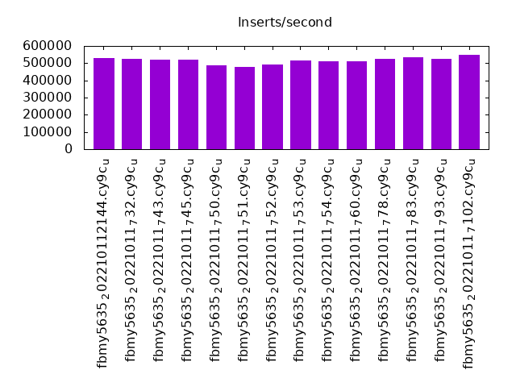
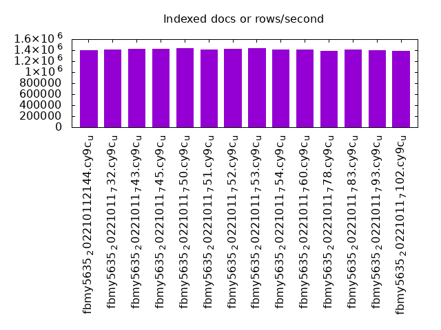
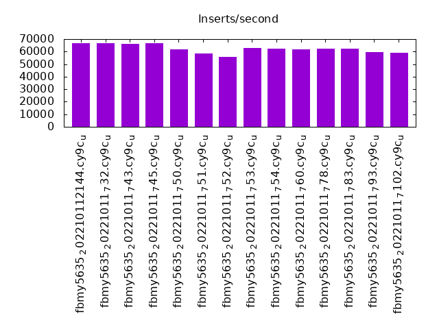
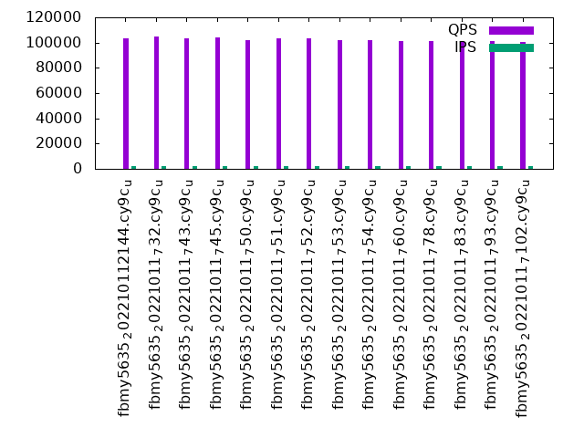
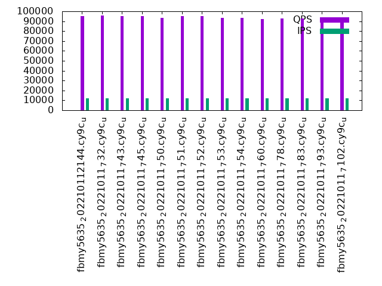
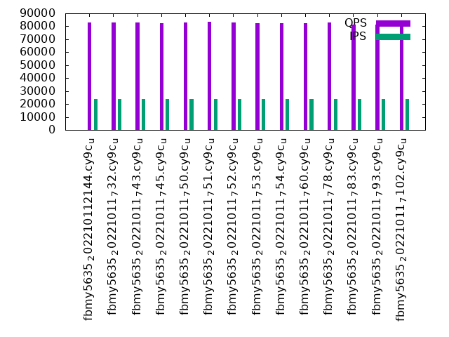

This is a report for the insert benchmark with 480M docs and 24 client(s). It is generated by scripts (bash, awk, sed) and Tufte might not be impressed. An overview of the insert benchmark is here and a short update is here. Below, by DBMS, I mean DBMS+version.config. An example is my8020.c10b40 where my means MySQL, 8020 is version 8.0.20 and c10b40 is the name for the configuration file.
The test server has 80 cores, hyperthreads enabled, 256G RAM and fast NVMe with XFS. The benchmark was run with 24 clients and there were 1 or 3 connections per client (1 for queries or inserts without rate limits, 1+1 for rate limited inserts+deletes). There are 24 tables, with a client per table. It loads 20M rows per-table without secondary indexes, creates secondary indexes, then inserts 50M rows per-table with a delete per insert to avoid growing the table. It then does 3 read+write tests for 3600s each that do queries as fast as possible with 100, 500 and then 1000 inserts/second/client concurrent with the queries and 1000 deletes/second to avoid growing the table. The database is cached by RocksDB.
The tested DBMS are:
The numbers are inserts/s for l.i0 and l.i1, indexed docs (or rows) /s for l.x and queries/s for q100, q500, q1000. The values are the average rate over the entire test for inserts (IPS) and queries (QPS). The range of values for IPS and QPS is split into 3 parts: bottom 25%, middle 50%, top 25%. Values in the bottom 25% have a red background, values in the top 25% have a green background and values in the middle have no color. A gray background is used for values that can be ignored because the DBMS did not sustain the target insert rate. Red backgrounds are not used when the minimum value is within 80% of the max value.
| dbms | l.i0 | l.x | l.i1 | q100.1 | q500.1 | q1000.1 |
|---|---|---|---|---|---|---|
| fbmy5635_202210112144.cy9c_u | 528053 | 1399708 | 66489 | 103425 | 95203 | 82775 |
| fbmy5635_20221011_732.cy9c_u | 525739 | 1416224 | 66570 | 104723 | 95679 | 83012 |
| fbmy5635_20221011_743.cy9c_u | 521739 | 1420414 | 66442 | 103509 | 95188 | 83063 |
| fbmy5635_20221011_745.cy9c_u | 518919 | 1424629 | 66548 | 104352 | 95228 | 82392 |
| fbmy5635_20221011_750.cy9c_u | 488301 | 1433134 | 61923 | 101898 | 93301 | 82742 |
| fbmy5635_20221011_751.cy9c_u | 478088 | 1412059 | 58480 | 103140 | 94933 | 83284 |
| fbmy5635_20221011_752.cy9c_u | 493827 | 1424629 | 55889 | 103723 | 94953 | 83138 |
| fbmy5635_20221011_753.cy9c_u | 516685 | 1437425 | 62896 | 101768 | 93101 | 82446 |
| fbmy5635_20221011_754.cy9c_u | 512820 | 1412059 | 62565 | 101631 | 93076 | 82675 |
| fbmy5635_20221011_760.cy9c_u | 510096 | 1412059 | 61706 | 101426 | 92455 | 82492 |
| fbmy5635_20221011_778.cy9c_u | 525164 | 1391594 | 62160 | 101434 | 92498 | 82796 |
| fbmy5635_20221011_783.cy9c_u | 533333 | 1412059 | 62150 | 100747 | 92982 | 81418 |
| fbmy5635_20221011_793.cy9c_u | 525164 | 1399708 | 59841 | 101096 | 92264 | 81175 |
| fbmy5635_20221011_7102.cy9c_u | 548571 | 1391594 | 59046 | 100611 | 90876 | 80798 |
This table has relative throughput, throughput for the DBMS relative to the DBMS in the first line, using the absolute throughput from the previous table. Values less than 0.95 have a yellow background. Values greater than 1.05 have a blue background.
| dbms | l.i0 | l.x | l.i1 | q100.1 | q500.1 | q1000.1 |
|---|---|---|---|---|---|---|
| fbmy5635_202210112144.cy9c_u | 1.00 | 1.00 | 1.00 | 1.00 | 1.00 | 1.00 |
| fbmy5635_20221011_732.cy9c_u | 1.00 | 1.01 | 1.00 | 1.01 | 1.00 | 1.00 |
| fbmy5635_20221011_743.cy9c_u | 0.99 | 1.01 | 1.00 | 1.00 | 1.00 | 1.00 |
| fbmy5635_20221011_745.cy9c_u | 0.98 | 1.02 | 1.00 | 1.01 | 1.00 | 1.00 |
| fbmy5635_20221011_750.cy9c_u | 0.92 | 1.02 | 0.93 | 0.99 | 0.98 | 1.00 |
| fbmy5635_20221011_751.cy9c_u | 0.91 | 1.01 | 0.88 | 1.00 | 1.00 | 1.01 |
| fbmy5635_20221011_752.cy9c_u | 0.94 | 1.02 | 0.84 | 1.00 | 1.00 | 1.00 |
| fbmy5635_20221011_753.cy9c_u | 0.98 | 1.03 | 0.95 | 0.98 | 0.98 | 1.00 |
| fbmy5635_20221011_754.cy9c_u | 0.97 | 1.01 | 0.94 | 0.98 | 0.98 | 1.00 |
| fbmy5635_20221011_760.cy9c_u | 0.97 | 1.01 | 0.93 | 0.98 | 0.97 | 1.00 |
| fbmy5635_20221011_778.cy9c_u | 0.99 | 0.99 | 0.93 | 0.98 | 0.97 | 1.00 |
| fbmy5635_20221011_783.cy9c_u | 1.01 | 1.01 | 0.93 | 0.97 | 0.98 | 0.98 |
| fbmy5635_20221011_793.cy9c_u | 0.99 | 1.00 | 0.90 | 0.98 | 0.97 | 0.98 |
| fbmy5635_20221011_7102.cy9c_u | 1.04 | 0.99 | 0.89 | 0.97 | 0.95 | 0.98 |
This lists the average rate of inserts/s for the tests that do inserts concurrent with queries. For such tests the query rate is listed in the table above. The read+write tests are setup so that the insert rate should match the target rate every second. Cells that are not at least 95% of the target have a red background to indicate a failure to satisfy the target.
| dbms | q100.1 | q500.1 | q1000.1 |
|---|---|---|---|
| fbmy5635_202210112144.cy9c_u | 2381 | 11907 | 23828 |
| fbmy5635_20221011_732.cy9c_u | 2381 | 11907 | 23828 |
| fbmy5635_20221011_743.cy9c_u | 2381 | 11907 | 23828 |
| fbmy5635_20221011_745.cy9c_u | 2382 | 11907 | 23828 |
| fbmy5635_20221011_750.cy9c_u | 2381 | 11907 | 23828 |
| fbmy5635_20221011_751.cy9c_u | 2381 | 11904 | 23828 |
| fbmy5635_20221011_752.cy9c_u | 2381 | 11907 | 23828 |
| fbmy5635_20221011_753.cy9c_u | 2381 | 11907 | 23821 |
| fbmy5635_20221011_754.cy9c_u | 2381 | 11907 | 23828 |
| fbmy5635_20221011_760.cy9c_u | 2381 | 11907 | 23828 |
| fbmy5635_20221011_778.cy9c_u | 2381 | 11907 | 23821 |
| fbmy5635_20221011_783.cy9c_u | 2381 | 11907 | 23828 |
| fbmy5635_20221011_793.cy9c_u | 2382 | 11907 | 23828 |
| fbmy5635_20221011_7102.cy9c_u | 2381 | 11907 | 23834 |
| target | 2400 | 12000 | 24000 |
l.i0: load without secondary indexes. Graphs for performance per 1-second interval are here.
Average throughput:
Insert response time histogram: each cell has the percentage of responses that take <= the time in the header and max is the max response time in seconds. For the max column values in the top 25% of the range have a red background and in the bottom 25% of the range have a green background. The red background is not used when the min value is within 80% of the max value.
| dbms | 256us | 1ms | 4ms | 16ms | 64ms | 256ms | 1s | 4s | 16s | gt | max |
|---|---|---|---|---|---|---|---|---|---|---|---|
| fbmy5635_202210112144.cy9c_u | 0.277 | 40.677 | 59.003 | 0.002 | 0.041 | 0.102 | |||||
| fbmy5635_20221011_732.cy9c_u | 0.256 | 40.631 | 59.070 | 0.002 | 0.041 | 0.101 | |||||
| fbmy5635_20221011_743.cy9c_u | 0.215 | 36.469 | 63.275 | nonzero | 0.041 | 0.096 | |||||
| fbmy5635_20221011_745.cy9c_u | 0.273 | 38.830 | 60.854 | 0.002 | 0.041 | 0.102 | |||||
| fbmy5635_20221011_750.cy9c_u | 0.237 | 27.097 | 72.624 | 0.001 | 0.041 | 0.159 | |||||
| fbmy5635_20221011_751.cy9c_u | 0.265 | 25.720 | 73.973 | 0.001 | 0.041 | 0.094 | |||||
| fbmy5635_20221011_752.cy9c_u | 0.225 | 30.696 | 69.037 | 0.001 | 0.041 | 0.095 | |||||
| fbmy5635_20221011_753.cy9c_u | 0.247 | 38.267 | 61.444 | nonzero | 0.041 | 0.171 | |||||
| fbmy5635_20221011_754.cy9c_u | 0.234 | 35.611 | 64.112 | 0.002 | 0.041 | 0.160 | |||||
| fbmy5635_20221011_760.cy9c_u | 0.216 | 36.797 | 62.944 | 0.002 | 0.041 | 0.100 | |||||
| fbmy5635_20221011_778.cy9c_u | 0.198 | 40.155 | 59.606 | nonzero | 0.041 | 0.099 | |||||
| fbmy5635_20221011_783.cy9c_u | 0.243 | 43.194 | 56.523 | nonzero | 0.041 | 0.147 | |||||
| fbmy5635_20221011_793.cy9c_u | 0.204 | 42.303 | 57.450 | 0.002 | 0.041 | 0.115 | |||||
| fbmy5635_20221011_7102.cy9c_u | 0.175 | 46.344 | 53.438 | 0.001 | 0.041 | 0.091 |
Performance metrics for the DBMS listed above. Some are normalized by throughput, others are not. Legend for results is here.
ips qps rps rmbps wps wmbps rpq rkbpq wpi wkbpi csps cpups cspq cpupq dbgb1 dbgb2 rss maxop p50 p99 tag 528053 0 0 0.0 2102.3 249.8 0.000 0.000 0.004 0.484 668029 38.9 1.265 59 15.9 17.0 4.9 0.102 22480 13586 480m.fbmy5635_202210112144.cy9c_u 525739 0 0 0.0 2106.4 210.3 0.000 0.000 0.004 0.410 684901 38.5 1.303 59 15.6 16.8 4.9 0.101 22778 13488 480m.fbmy5635_20221011_732.cy9c_u 521739 0 0 0.0 2070.2 245.0 0.000 0.000 0.004 0.481 687322 38.6 1.317 59 15.4 16.6 4.7 0.096 22178 13987 480m.fbmy5635_20221011_743.cy9c_u 518919 0 0 0.0 2059.2 243.5 0.000 0.000 0.004 0.480 668324 38.4 1.288 59 15.7 16.8 4.8 0.102 22278 13886 480m.fbmy5635_20221011_745.cy9c_u 488301 0 0 0.0 1987.8 233.4 0.000 0.000 0.004 0.489 684791 39.1 1.402 64 15.8 17.0 4.5 0.159 20879 13789 480m.fbmy5635_20221011_750.cy9c_u 478088 0 0 0.0 1977.2 233.5 0.000 0.000 0.004 0.500 717386 37.8 1.501 63 15.6 16.8 4.6 0.094 20582 11489 480m.fbmy5635_20221011_751.cy9c_u 493827 0 0 0.0 2056.6 241.8 0.000 0.000 0.004 0.501 679996 38.3 1.377 62 15.6 16.8 4.6 0.095 20979 13187 480m.fbmy5635_20221011_752.cy9c_u 516685 0 0 0.0 2183.6 258.4 0.000 0.000 0.004 0.512 659964 39.1 1.277 61 15.6 16.7 4.5 0.171 21878 10888 480m.fbmy5635_20221011_753.cy9c_u 512820 0 0 0.0 2193.5 262.2 0.000 0.000 0.004 0.524 667136 40.6 1.301 63 15.7 16.8 4.5 0.160 21479 13888 480m.fbmy5635_20221011_754.cy9c_u 510096 0 0 0.0 2121.0 252.6 0.000 0.000 0.004 0.507 637451 40.3 1.250 63 16.0 17.2 4.4 0.100 22076 13786 480m.fbmy5635_20221011_760.cy9c_u 525164 0 0 0.0 2205.6 261.0 0.000 0.000 0.004 0.509 620783 40.8 1.182 62 17.2 18.4 4.4 0.099 22577 14982 480m.fbmy5635_20221011_778.cy9c_u 533333 0 0 0.0 1779.0 209.1 0.000 0.000 0.003 0.401 633898 39.5 1.189 59 15.6 16.7 3.9 0.147 22777 14386 480m.fbmy5635_20221011_783.cy9c_u 525164 0 0 0.0 1737.9 205.2 0.000 0.000 0.003 0.400 634352 38.9 1.208 59 15.3 16.5 3.8 0.115 22775 13887 480m.fbmy5635_20221011_793.cy9c_u 548571 0 0 0.0 1732.8 205.3 0.000 0.000 0.003 0.383 636599 39.6 1.160 58 15.2 16.4 3.7 0.091 23277 14987 480m.fbmy5635_20221011_7102.cy9c_u
l.x: create secondary indexes.
Average throughput:
Performance metrics for the DBMS listed above. Some are normalized by throughput, others are not. Legend for results is here.
ips qps rps rmbps wps wmbps rpq rkbpq wpi wkbpi csps cpups cspq cpupq dbgb1 dbgb2 rss maxop p50 p99 tag 1399708 0 29 0.2 1909.7 209.5 0.000 0.000 0.001 0.153 33596 28.5 0.024 16 32.4 33.6 45.0 0.002 NA NA 480m.fbmy5635_202210112144.cy9c_u 1416224 0 29 0.2 1882.7 187.3 0.000 0.000 0.001 0.135 27957 27.5 0.020 16 32.5 33.6 45.6 0.002 NA NA 480m.fbmy5635_20221011_732.cy9c_u 1420414 0 29 0.2 1874.7 205.3 0.000 0.000 0.001 0.148 27891 27.6 0.020 16 32.4 33.5 43.0 0.003 NA NA 480m.fbmy5635_20221011_743.cy9c_u 1424629 0 30 0.2 1957.4 215.5 0.000 0.000 0.001 0.155 26429 27.8 0.019 16 32.4 33.6 47.6 0.002 NA NA 480m.fbmy5635_20221011_745.cy9c_u 1433134 0 30 0.2 1954.2 214.8 0.000 0.000 0.001 0.153 24692 29.0 0.017 16 32.4 33.5 43.7 0.002 NA NA 480m.fbmy5635_20221011_750.cy9c_u 1412059 0 29 0.2 1903.5 209.6 0.000 0.000 0.001 0.152 26972 27.5 0.019 16 32.3 33.5 44.7 0.003 NA NA 480m.fbmy5635_20221011_751.cy9c_u 1424629 0 30 0.2 1926.5 212.1 0.000 0.000 0.001 0.152 28152 28.3 0.020 16 32.4 33.5 44.3 0.003 NA NA 480m.fbmy5635_20221011_752.cy9c_u 1437425 0 30 0.2 1904.8 209.3 0.000 0.000 0.001 0.149 27147 27.7 0.019 15 32.4 33.6 42.6 0.003 NA NA 480m.fbmy5635_20221011_753.cy9c_u 1412059 0 29 0.2 1929.2 212.4 0.000 0.000 0.001 0.154 31009 28.9 0.022 16 32.3 33.5 43.8 0.003 NA NA 480m.fbmy5635_20221011_754.cy9c_u 1412059 0 29 0.2 1970.6 217.6 0.000 0.000 0.001 0.158 29380 28.9 0.021 16 32.4 33.5 43.1 0.003 NA NA 480m.fbmy5635_20221011_760.cy9c_u 1391594 0 29 0.2 1904.7 209.2 0.000 0.000 0.001 0.154 30942 29.1 0.022 17 32.4 33.6 41.7 0.003 NA NA 480m.fbmy5635_20221011_778.cy9c_u 1412059 0 29 0.2 1820.6 198.6 0.000 0.000 0.001 0.144 26355 28.6 0.019 16 32.3 33.5 40.1 0.002 NA NA 480m.fbmy5635_20221011_783.cy9c_u 1399708 0 29 0.2 1768.6 192.0 0.000 0.000 0.001 0.140 26865 28.6 0.019 16 32.4 33.5 40.0 0.002 NA NA 480m.fbmy5635_20221011_793.cy9c_u 1391594 0 29 0.2 1768.5 193.3 0.000 0.000 0.001 0.142 26442 28.7 0.019 16 32.3 33.5 40.9 0.003 NA NA 480m.fbmy5635_20221011_7102.cy9c_u
l.i1: continue load after secondary indexes created. Graphs for performance per 1-second interval are here.
Average throughput:
Insert response time histogram: each cell has the percentage of responses that take <= the time in the header and max is the max response time in seconds. For the max column values in the top 25% of the range have a red background and in the bottom 25% of the range have a green background. The red background is not used when the min value is within 80% of the max value.
| dbms | 256us | 1ms | 4ms | 16ms | 64ms | 256ms | 1s | 4s | 16s | gt | max |
|---|---|---|---|---|---|---|---|---|---|---|---|
| fbmy5635_202210112144.cy9c_u | 0.046 | 23.245 | 76.706 | 0.004 | 0.160 | ||||||
| fbmy5635_20221011_732.cy9c_u | 0.046 | 23.101 | 76.849 | 0.004 | 0.160 | ||||||
| fbmy5635_20221011_743.cy9c_u | 0.039 | 22.810 | 77.148 | 0.003 | 0.176 | ||||||
| fbmy5635_20221011_745.cy9c_u | 0.044 | 23.137 | 76.816 | 0.003 | 0.173 | ||||||
| fbmy5635_20221011_750.cy9c_u | 0.036 | 16.207 | 83.754 | 0.003 | 0.169 | ||||||
| fbmy5635_20221011_751.cy9c_u | 0.047 | 16.915 | 82.663 | 0.236 | 0.100 | 0.038 | 2.808 | ||||
| fbmy5635_20221011_752.cy9c_u | 0.051 | 18.128 | 81.149 | 0.415 | 0.193 | 0.063 | 2.816 | ||||
| fbmy5635_20221011_753.cy9c_u | 0.034 | 17.610 | 82.353 | 0.003 | 0.159 | ||||||
| fbmy5635_20221011_754.cy9c_u | 0.033 | 17.343 | 82.621 | 0.003 | 0.171 | ||||||
| fbmy5635_20221011_760.cy9c_u | 0.037 | 15.635 | 84.325 | 0.002 | 0.221 | ||||||
| fbmy5635_20221011_778.cy9c_u | 0.037 | 16.592 | 83.368 | 0.003 | 0.141 | ||||||
| fbmy5635_20221011_783.cy9c_u | 0.056 | 17.080 | 82.756 | 0.107 | 0.001 | 0.340 | |||||
| fbmy5635_20221011_793.cy9c_u | 0.041 | 12.621 | 87.335 | 0.004 | 0.186 | ||||||
| fbmy5635_20221011_7102.cy9c_u | 0.047 | 12.619 | 87.233 | 0.100 | 0.001 | 0.339 |
Delete response time histogram: each cell has the percentage of responses that take <= the time in the header and max is the max response time in seconds. For the max column values in the top 25% of the range have a red background and in the bottom 25% of the range have a green background. The red background is not used when the min value is within 80% of the max value.
| dbms | 256us | 1ms | 4ms | 16ms | 64ms | 256ms | 1s | 4s | 16s | gt | max |
|---|---|---|---|---|---|---|---|---|---|---|---|
| fbmy5635_202210112144.cy9c_u | 0.002 | 0.045 | 25.742 | 74.205 | 0.005 | nonzero | 0.275 | ||||
| fbmy5635_20221011_732.cy9c_u | nonzero | 0.047 | 25.629 | 74.318 | 0.005 | 0.202 | |||||
| fbmy5635_20221011_743.cy9c_u | nonzero | 0.040 | 25.412 | 74.544 | 0.004 | 0.197 | |||||
| fbmy5635_20221011_745.cy9c_u | nonzero | 0.045 | 25.432 | 74.519 | 0.004 | 0.174 | |||||
| fbmy5635_20221011_750.cy9c_u | 0.001 | 0.035 | 17.649 | 82.310 | 0.004 | nonzero | 0.257 | ||||
| fbmy5635_20221011_751.cy9c_u | nonzero | 0.048 | 17.667 | 81.905 | 0.241 | 0.100 | 0.038 | 2.808 | |||
| fbmy5635_20221011_752.cy9c_u | 0.001 | 0.051 | 18.527 | 80.744 | 0.420 | 0.194 | 0.063 | 2.816 | |||
| fbmy5635_20221011_753.cy9c_u | nonzero | 0.033 | 18.956 | 81.007 | 0.003 | nonzero | 0.279 | ||||
| fbmy5635_20221011_754.cy9c_u | 0.001 | 0.032 | 18.660 | 81.302 | 0.004 | nonzero | 0.268 | ||||
| fbmy5635_20221011_760.cy9c_u | 0.001 | 0.038 | 16.836 | 83.124 | 0.003 | 0.236 | |||||
| fbmy5635_20221011_778.cy9c_u | nonzero | 0.037 | 17.502 | 82.457 | 0.003 | 0.248 | |||||
| fbmy5635_20221011_783.cy9c_u | nonzero | 0.056 | 18.789 | 81.042 | 0.112 | 0.001 | 0.456 | ||||
| fbmy5635_20221011_793.cy9c_u | nonzero | 0.041 | 14.129 | 85.826 | 0.004 | nonzero | 0.316 | ||||
| fbmy5635_20221011_7102.cy9c_u | nonzero | 0.048 | 13.827 | 86.022 | 0.103 | 0.001 | 0.848 |
Performance metrics for the DBMS listed above. Some are normalized by throughput, others are not. Legend for results is here.
ips qps rps rmbps wps wmbps rpq rkbpq wpi wkbpi csps cpups cspq cpupq dbgb1 dbgb2 rss maxop p50 p99 tag 66489 0 137 1.2 1710.2 204.1 0.002 0.018 0.026 3.144 190236 17.1 2.861 206 44.5 44.6 177.3 0.160 2797 2497 480m.fbmy5635_202210112144.cy9c_u 66570 0 219 1.6 1707.0 188.0 0.003 0.024 0.026 2.892 182070 16.5 2.735 198 46.4 46.5 177.3 0.160 2797 2497 480m.fbmy5635_20221011_732.cy9c_u 66442 0 132 1.2 1702.9 196.8 0.002 0.018 0.026 3.033 181532 16.7 2.732 201 42.5 42.6 177.1 0.176 2797 2497 480m.fbmy5635_20221011_743.cy9c_u 66548 0 129 1.2 1714.3 200.8 0.002 0.018 0.026 3.090 183838 16.9 2.762 203 42.7 42.8 177.5 0.173 2797 2497 480m.fbmy5635_20221011_745.cy9c_u 61923 0 148 1.3 1572.8 181.2 0.002 0.022 0.025 2.996 185398 17.6 2.994 227 40.7 40.8 177.6 0.169 2597 2298 480m.fbmy5635_20221011_750.cy9c_u 58480 0 68 0.8 1428.4 166.7 0.001 0.014 0.024 2.920 210856 16.3 3.606 223 39.0 39.1 177.6 2.808 2597 50 480m.fbmy5635_20221011_751.cy9c_u 55889 0 90 0.9 1337.7 157.5 0.002 0.016 0.024 2.886 221437 16.0 3.962 229 40.3 40.4 177.7 2.816 2598 0 480m.fbmy5635_20221011_752.cy9c_u 62896 0 94 1.1 1606.8 184.5 0.001 0.017 0.026 3.004 191627 17.7 3.047 225 39.0 39.1 177.5 0.159 2647 2347 480m.fbmy5635_20221011_753.cy9c_u 62565 0 88 1.1 1596.4 186.6 0.001 0.018 0.026 3.054 190265 18.0 3.041 230 44.0 44.1 177.5 0.171 2598 2347 480m.fbmy5635_20221011_754.cy9c_u 61706 0 84 1.0 1575.6 184.2 0.001 0.016 0.026 3.056 171474 17.6 2.779 228 40.3 40.5 177.6 0.221 2597 2298 480m.fbmy5635_20221011_760.cy9c_u 62160 0 127 1.2 1584.7 185.6 0.002 0.020 0.025 3.057 177455 18.1 2.855 233 36.9 37.0 177.5 0.141 2597 2347 480m.fbmy5635_20221011_778.cy9c_u 62150 0 120 1.3 1338.6 155.9 0.002 0.021 0.022 2.568 181784 17.0 2.925 219 44.7 44.8 178.2 0.340 2647 1649 480m.fbmy5635_20221011_783.cy9c_u 59841 0 66 0.9 1318.7 153.2 0.001 0.015 0.022 2.622 161597 16.2 2.700 217 43.8 43.9 178.0 0.186 2498 2247 480m.fbmy5635_20221011_793.cy9c_u 59046 0 114 1.3 1243.8 145.2 0.002 0.023 0.021 2.518 195542 16.9 3.312 229 43.3 43.4 178.1 0.339 2497 1649 480m.fbmy5635_20221011_7102.cy9c_u
q100.1: range queries with 100 insert/s per client. Graphs for performance per 1-second interval are here.
Average throughput:
Query response time histogram: each cell has the percentage of responses that take <= the time in the header and max is the max response time in seconds. For max values in the top 25% of the range have a red background and in the bottom 25% of the range have a green background. The red background is not used when the min value is within 80% of the max value.
| dbms | 256us | 1ms | 4ms | 16ms | 64ms | 256ms | 1s | 4s | 16s | gt | max |
|---|---|---|---|---|---|---|---|---|---|---|---|
| fbmy5635_202210112144.cy9c_u | 79.648 | 20.351 | 0.001 | nonzero | nonzero | 0.067 | |||||
| fbmy5635_20221011_732.cy9c_u | 81.545 | 18.454 | 0.001 | nonzero | nonzero | 0.061 | |||||
| fbmy5635_20221011_743.cy9c_u | 79.666 | 20.333 | 0.001 | nonzero | nonzero | 0.059 | |||||
| fbmy5635_20221011_745.cy9c_u | 80.868 | 19.131 | 0.001 | nonzero | nonzero | 0.022 | |||||
| fbmy5635_20221011_750.cy9c_u | 77.485 | 22.513 | 0.001 | nonzero | nonzero | nonzero | 0.068 | ||||
| fbmy5635_20221011_751.cy9c_u | 78.993 | 21.006 | 0.001 | nonzero | nonzero | 0.058 | |||||
| fbmy5635_20221011_752.cy9c_u | 79.806 | 20.193 | 0.001 | nonzero | nonzero | 0.055 | |||||
| fbmy5635_20221011_753.cy9c_u | 77.292 | 22.706 | 0.001 | nonzero | nonzero | 0.036 | |||||
| fbmy5635_20221011_754.cy9c_u | 77.084 | 22.915 | 0.001 | nonzero | nonzero | 0.031 | |||||
| fbmy5635_20221011_760.cy9c_u | 76.499 | 23.499 | 0.001 | nonzero | nonzero | nonzero | 0.072 | ||||
| fbmy5635_20221011_778.cy9c_u | 76.670 | 23.329 | 0.001 | nonzero | nonzero | nonzero | 0.067 | ||||
| fbmy5635_20221011_783.cy9c_u | 75.459 | 24.540 | 0.001 | nonzero | nonzero | 0.040 | |||||
| fbmy5635_20221011_793.cy9c_u | 75.822 | 24.177 | 0.001 | nonzero | nonzero | 0.024 | |||||
| fbmy5635_20221011_7102.cy9c_u | 75.041 | 24.958 | 0.001 | nonzero | nonzero | 0.054 |
Insert response time histogram: each cell has the percentage of responses that take <= the time in the header and max is the max response time in seconds. For max values in the top 25% of the range have a red background and in the bottom 25% of the range have a green background. The red background is not used when the min value is within 80% of the max value.
| dbms | 256us | 1ms | 4ms | 16ms | 64ms | 256ms | 1s | 4s | 16s | gt | max |
|---|---|---|---|---|---|---|---|---|---|---|---|
| fbmy5635_202210112144.cy9c_u | 99.999 | 0.001 | 0.006 | ||||||||
| fbmy5635_20221011_732.cy9c_u | 99.997 | 0.002 | 0.001 | 0.042 | |||||||
| fbmy5635_20221011_743.cy9c_u | 99.998 | 0.002 | 0.008 | ||||||||
| fbmy5635_20221011_745.cy9c_u | 99.993 | 0.007 | 0.011 | ||||||||
| fbmy5635_20221011_750.cy9c_u | 99.997 | 0.003 | 0.007 | ||||||||
| fbmy5635_20221011_751.cy9c_u | 99.998 | 0.002 | 0.012 | ||||||||
| fbmy5635_20221011_752.cy9c_u | 99.987 | 0.013 | 0.006 | ||||||||
| fbmy5635_20221011_753.cy9c_u | 99.988 | 0.012 | 0.007 | ||||||||
| fbmy5635_20221011_754.cy9c_u | 99.995 | 0.005 | 0.009 | ||||||||
| fbmy5635_20221011_760.cy9c_u | 99.996 | 0.004 | 0.011 | ||||||||
| fbmy5635_20221011_778.cy9c_u | 99.994 | 0.006 | 0.006 | ||||||||
| fbmy5635_20221011_783.cy9c_u | 99.944 | 0.056 | 0.012 | ||||||||
| fbmy5635_20221011_793.cy9c_u | 99.958 | 0.042 | 0.006 | ||||||||
| fbmy5635_20221011_7102.cy9c_u | 99.981 | 0.019 | 0.006 |
Delete response time histogram: each cell has the percentage of responses that take <= the time in the header and max is the max response time in seconds. For max values in the top 25% of the range have a red background and in the bottom 25% of the range have a green background. The red background is not used when the min value is within 80% of the max value.
| dbms | 256us | 1ms | 4ms | 16ms | 64ms | 256ms | 1s | 4s | 16s | gt | max |
|---|---|---|---|---|---|---|---|---|---|---|---|
| fbmy5635_202210112144.cy9c_u | 0.001 | 99.995 | 0.001 | 0.002 | 0.001 | 0.073 | |||||
| fbmy5635_20221011_732.cy9c_u | 0.002 | 99.989 | 0.006 | 0.002 | 0.001 | 0.067 | |||||
| fbmy5635_20221011_743.cy9c_u | 99.992 | 0.003 | 0.004 | 0.001 | 0.067 | ||||||
| fbmy5635_20221011_745.cy9c_u | 0.001 | 99.991 | 0.006 | 0.003 | 0.058 | ||||||
| fbmy5635_20221011_750.cy9c_u | 99.996 | 0.003 | 0.001 | 0.062 | |||||||
| fbmy5635_20221011_751.cy9c_u | 0.001 | 99.988 | 0.005 | 0.006 | 0.050 | ||||||
| fbmy5635_20221011_752.cy9c_u | 0.001 | 99.990 | 0.006 | 0.003 | 0.001 | 0.089 | |||||
| fbmy5635_20221011_753.cy9c_u | 0.001 | 99.992 | 0.005 | 0.002 | 0.052 | ||||||
| fbmy5635_20221011_754.cy9c_u | 0.001 | 99.992 | 0.005 | 0.001 | 0.002 | 0.083 | |||||
| fbmy5635_20221011_760.cy9c_u | 99.992 | 0.003 | 0.003 | 0.001 | 0.067 | ||||||
| fbmy5635_20221011_778.cy9c_u | 99.994 | 0.003 | 0.002 | 0.001 | 0.076 | ||||||
| fbmy5635_20221011_783.cy9c_u | 0.001 | 99.959 | 0.035 | 0.005 | 0.048 | ||||||
| fbmy5635_20221011_793.cy9c_u | 99.973 | 0.023 | 0.003 | 0.001 | 0.067 | ||||||
| fbmy5635_20221011_7102.cy9c_u | 99.984 | 0.013 | 0.002 | 0.001 | 0.108 |
Performance metrics for the DBMS listed above. Some are normalized by throughput, others are not. Legend for results is here.
ips qps rps rmbps wps wmbps rpq rkbpq wpi wkbpi csps cpups cspq cpupq dbgb1 dbgb2 rss maxop p50 p99 tag 2381 103425 17 0.2 144.4 16.7 0.000 0.002 0.061 7.166 467807 31.7 4.523 245 35.7 37.6 179.0 0.067 4316 3756 480m.fbmy5635_202210112144.cy9c_u 2381 104723 9 0.2 128.3 14.9 0.000 0.002 0.054 6.425 467480 31.2 4.464 238 35.7 37.6 178.8 0.061 4412 3820 480m.fbmy5635_20221011_732.cy9c_u 2381 103509 14 0.2 129.5 15.1 0.000 0.002 0.054 6.488 463445 31.2 4.477 241 35.8 37.7 178.7 0.059 4347 3676 480m.fbmy5635_20221011_743.cy9c_u 2382 104352 11 0.2 125.9 14.6 0.000 0.002 0.053 6.282 467788 31.1 4.483 238 35.7 37.7 178.7 0.022 4331 3598 480m.fbmy5635_20221011_745.cy9c_u 2381 101898 7 0.1 103.7 11.8 0.000 0.001 0.044 5.090 453063 32.0 4.446 251 36.0 37.9 178.9 0.068 4284 3772 480m.fbmy5635_20221011_750.cy9c_u 2381 103140 6 0.1 97.8 11.2 0.000 0.001 0.041 4.796 460878 30.9 4.468 240 35.9 37.8 179.0 0.058 4332 3772 480m.fbmy5635_20221011_751.cy9c_u 2381 103723 5 0.0 87.7 9.9 0.000 0.000 0.037 4.253 464272 30.9 4.476 238 36.0 37.9 178.8 0.055 4315 3788 480m.fbmy5635_20221011_752.cy9c_u 2381 101768 6 0.1 95.0 10.8 0.000 0.001 0.040 4.637 460213 32.1 4.522 252 35.9 37.9 178.7 0.036 4236 3740 480m.fbmy5635_20221011_753.cy9c_u 2381 101631 5 0.1 92.9 10.5 0.000 0.001 0.039 4.530 456980 32.0 4.496 252 35.9 37.9 178.7 0.031 4204 3692 480m.fbmy5635_20221011_754.cy9c_u 2381 101426 7 0.1 97.1 11.1 0.000 0.001 0.041 4.755 453226 32.5 4.469 256 35.9 37.8 178.9 0.072 4220 3660 480m.fbmy5635_20221011_760.cy9c_u 2381 101434 7 0.1 93.0 10.5 0.000 0.001 0.039 4.533 447860 32.1 4.415 253 36.2 38.1 178.7 0.067 4284 3756 480m.fbmy5635_20221011_778.cy9c_u 2381 100747 14 0.4 77.0 8.5 0.000 0.004 0.032 3.667 444000 31.9 4.407 253 37.1 39.1 179.5 0.040 4236 3724 480m.fbmy5635_20221011_783.cy9c_u 2382 101096 39 0.5 77.7 8.6 0.000 0.005 0.033 3.705 446171 31.9 4.413 252 37.0 39.0 179.2 0.024 4268 3708 480m.fbmy5635_20221011_793.cy9c_u 2381 100611 8 0.3 83.8 9.4 0.000 0.003 0.035 4.030 443806 32.0 4.411 254 37.0 38.9 179.4 0.054 4204 3708 480m.fbmy5635_20221011_7102.cy9c_u
q500.1: range queries with 500 insert/s per client. Graphs for performance per 1-second interval are here.
Average throughput:
Query response time histogram: each cell has the percentage of responses that take <= the time in the header and max is the max response time in seconds. For max values in the top 25% of the range have a red background and in the bottom 25% of the range have a green background. The red background is not used when the min value is within 80% of the max value.
| dbms | 256us | 1ms | 4ms | 16ms | 64ms | 256ms | 1s | 4s | 16s | gt | max |
|---|---|---|---|---|---|---|---|---|---|---|---|
| fbmy5635_202210112144.cy9c_u | 65.754 | 34.244 | 0.001 | nonzero | nonzero | nonzero | 0.082 | ||||
| fbmy5635_20221011_732.cy9c_u | 66.665 | 33.334 | 0.001 | nonzero | nonzero | nonzero | 0.083 | ||||
| fbmy5635_20221011_743.cy9c_u | 65.705 | 34.293 | 0.001 | nonzero | nonzero | nonzero | 0.143 | ||||
| fbmy5635_20221011_745.cy9c_u | 65.850 | 34.149 | 0.001 | nonzero | nonzero | nonzero | 0.087 | ||||
| fbmy5635_20221011_750.cy9c_u | 62.139 | 37.858 | 0.002 | nonzero | nonzero | nonzero | 0.195 | ||||
| fbmy5635_20221011_751.cy9c_u | 65.277 | 34.721 | 0.001 | nonzero | nonzero | nonzero | 0.080 | ||||
| fbmy5635_20221011_752.cy9c_u | 65.330 | 34.669 | 0.001 | nonzero | nonzero | nonzero | 0.083 | ||||
| fbmy5635_20221011_753.cy9c_u | 61.771 | 38.227 | 0.002 | nonzero | nonzero | nonzero | 0.083 | ||||
| fbmy5635_20221011_754.cy9c_u | 61.595 | 38.403 | 0.002 | nonzero | nonzero | nonzero | 0.127 | ||||
| fbmy5635_20221011_760.cy9c_u | 60.355 | 39.643 | 0.002 | nonzero | nonzero | nonzero | 0.148 | ||||
| fbmy5635_20221011_778.cy9c_u | 60.508 | 39.490 | 0.002 | nonzero | nonzero | nonzero | 0.085 | ||||
| fbmy5635_20221011_783.cy9c_u | 61.469 | 38.529 | 0.002 | nonzero | nonzero | nonzero | 0.080 | ||||
| fbmy5635_20221011_793.cy9c_u | 59.840 | 40.157 | 0.002 | nonzero | nonzero | nonzero | 0.082 | ||||
| fbmy5635_20221011_7102.cy9c_u | 56.773 | 43.224 | 0.003 | nonzero | nonzero | nonzero | 0.123 |
Insert response time histogram: each cell has the percentage of responses that take <= the time in the header and max is the max response time in seconds. For max values in the top 25% of the range have a red background and in the bottom 25% of the range have a green background. The red background is not used when the min value is within 80% of the max value.
| dbms | 256us | 1ms | 4ms | 16ms | 64ms | 256ms | 1s | 4s | 16s | gt | max |
|---|---|---|---|---|---|---|---|---|---|---|---|
| fbmy5635_202210112144.cy9c_u | 93.970 | 6.026 | 0.002 | 0.001 | 0.082 | ||||||
| fbmy5635_20221011_732.cy9c_u | 92.765 | 7.231 | 0.002 | 0.002 | 0.080 | ||||||
| fbmy5635_20221011_743.cy9c_u | 99.975 | 0.021 | 0.003 | 0.001 | 0.085 | ||||||
| fbmy5635_20221011_745.cy9c_u | 98.267 | 1.730 | 0.002 | 0.002 | 0.079 | ||||||
| fbmy5635_20221011_750.cy9c_u | 97.540 | 2.458 | 0.002 | 0.001 | 0.084 | ||||||
| fbmy5635_20221011_751.cy9c_u | 99.807 | 0.189 | 0.002 | 0.001 | 0.084 | ||||||
| fbmy5635_20221011_752.cy9c_u | 99.955 | 0.042 | 0.002 | 0.001 | 0.078 | ||||||
| fbmy5635_20221011_753.cy9c_u | 99.821 | 0.174 | 0.003 | 0.001 | 0.080 | ||||||
| fbmy5635_20221011_754.cy9c_u | 98.446 | 1.549 | 0.003 | 0.001 | 0.082 | ||||||
| fbmy5635_20221011_760.cy9c_u | 99.869 | 0.127 | 0.003 | 0.001 | 0.083 | ||||||
| fbmy5635_20221011_778.cy9c_u | 97.453 | 2.543 | 0.002 | 0.002 | 0.081 | ||||||
| fbmy5635_20221011_783.cy9c_u | 48.464 | 51.497 | 0.037 | 0.001 | 0.081 | ||||||
| fbmy5635_20221011_793.cy9c_u | 29.379 | 64.624 | 5.994 | 0.003 | 0.091 | ||||||
| fbmy5635_20221011_7102.cy9c_u | 13.556 | 44.164 | 42.272 | 0.008 | 0.100 |
Delete response time histogram: each cell has the percentage of responses that take <= the time in the header and max is the max response time in seconds. For max values in the top 25% of the range have a red background and in the bottom 25% of the range have a green background. The red background is not used when the min value is within 80% of the max value.
| dbms | 256us | 1ms | 4ms | 16ms | 64ms | 256ms | 1s | 4s | 16s | gt | max |
|---|---|---|---|---|---|---|---|---|---|---|---|
| fbmy5635_202210112144.cy9c_u | 95.055 | 4.934 | 0.008 | 0.003 | 0.091 | ||||||
| fbmy5635_20221011_732.cy9c_u | 0.004 | 93.871 | 6.113 | 0.008 | 0.004 | 0.121 | |||||
| fbmy5635_20221011_743.cy9c_u | 99.972 | 0.017 | 0.008 | 0.002 | 0.092 | ||||||
| fbmy5635_20221011_745.cy9c_u | 98.712 | 1.275 | 0.010 | 0.003 | 0.086 | ||||||
| fbmy5635_20221011_750.cy9c_u | 98.152 | 1.836 | 0.009 | 0.003 | 0.103 | ||||||
| fbmy5635_20221011_751.cy9c_u | 99.852 | 0.136 | 0.009 | 0.003 | 0.084 | ||||||
| fbmy5635_20221011_752.cy9c_u | 99.959 | 0.028 | 0.011 | 0.003 | 0.092 | ||||||
| fbmy5635_20221011_753.cy9c_u | 99.856 | 0.130 | 0.011 | 0.003 | 0.082 | ||||||
| fbmy5635_20221011_754.cy9c_u | 98.730 | 1.256 | 0.011 | 0.003 | 0.093 | ||||||
| fbmy5635_20221011_760.cy9c_u | 99.897 | 0.090 | 0.011 | 0.002 | 0.124 | ||||||
| fbmy5635_20221011_778.cy9c_u | 97.934 | 2.053 | 0.010 | 0.004 | 0.098 | ||||||
| fbmy5635_20221011_783.cy9c_u | nonzero | 51.696 | 48.261 | 0.042 | 0.002 | 0.082 | |||||
| fbmy5635_20221011_793.cy9c_u | 31.143 | 63.483 | 5.371 | 0.003 | 0.089 | ||||||
| fbmy5635_20221011_7102.cy9c_u | 0.001 | 14.166 | 45.560 | 40.263 | 0.010 | 0.101 |
Performance metrics for the DBMS listed above. Some are normalized by throughput, others are not. Legend for results is here.
ips qps rps rmbps wps wmbps rpq rkbpq wpi wkbpi csps cpups cspq cpupq dbgb1 dbgb2 rss maxop p50 p99 tag 11907 95203 21 0.3 377.1 44.1 0.000 0.003 0.032 3.795 447943 33.4 4.705 281 36.5 37.7 183.9 0.082 3980 3469 480m.fbmy5635_202210112144.cy9c_u 11907 95679 15 0.2 376.5 44.3 0.000 0.002 0.032 3.811 446825 33.0 4.670 276 36.3 37.4 183.9 0.083 3996 3453 480m.fbmy5635_20221011_732.cy9c_u 11907 95188 20 0.2 377.5 44.4 0.000 0.002 0.032 3.820 441022 32.8 4.633 276 36.4 37.6 183.6 0.143 3980 3437 480m.fbmy5635_20221011_743.cy9c_u 11907 95228 15 0.2 379.0 44.6 0.000 0.003 0.032 3.836 442539 32.8 4.647 276 36.6 37.8 183.7 0.087 3964 3436 480m.fbmy5635_20221011_745.cy9c_u 11907 93301 38 0.3 363.4 42.6 0.000 0.003 0.031 3.668 431804 33.8 4.628 290 36.4 37.6 183.4 0.195 3916 3389 480m.fbmy5635_20221011_750.cy9c_u 11904 94933 23 0.2 365.6 42.9 0.000 0.003 0.031 3.691 439873 32.9 4.633 277 36.1 37.3 183.4 0.080 3964 3421 480m.fbmy5635_20221011_751.cy9c_u 11907 94953 20 0.2 362.8 42.5 0.000 0.003 0.030 3.659 442783 33.0 4.663 278 36.3 37.5 183.3 0.083 3964 3421 480m.fbmy5635_20221011_752.cy9c_u 11907 93101 25 0.2 364.5 42.5 0.000 0.002 0.031 3.654 438611 33.9 4.711 291 36.8 38.0 183.2 0.083 3884 3356 480m.fbmy5635_20221011_753.cy9c_u 11907 93076 26 0.2 359.9 42.3 0.000 0.003 0.030 3.635 434789 33.8 4.671 291 36.5 37.7 183.1 0.127 3884 3388 480m.fbmy5635_20221011_754.cy9c_u 11907 92455 21 0.2 357.1 41.9 0.000 0.002 0.030 3.602 427572 34.1 4.625 295 36.7 38.0 183.3 0.148 3852 3325 480m.fbmy5635_20221011_760.cy9c_u 11907 92498 34 0.3 361.8 41.9 0.000 0.003 0.030 3.602 424992 34.1 4.595 295 36.4 37.6 183.1 0.085 3852 3341 480m.fbmy5635_20221011_778.cy9c_u 11907 92982 13 0.2 314.7 36.6 0.000 0.002 0.026 3.146 425856 33.9 4.580 292 37.2 38.4 183.0 0.080 3900 3404 480m.fbmy5635_20221011_783.cy9c_u 11907 92264 24 0.3 309.5 35.6 0.000 0.003 0.026 3.061 425767 34.0 4.615 295 37.4 38.6 183.0 0.082 3884 3341 480m.fbmy5635_20221011_793.cy9c_u 11907 90876 19 0.3 304.1 35.2 0.000 0.003 0.026 3.027 423069 34.1 4.655 300 37.5 38.6 182.9 0.123 3788 3245 480m.fbmy5635_20221011_7102.cy9c_u
q1000.1: range queries with 1000 insert/s per client. Graphs for performance per 1-second interval are here.
Average throughput:
Query response time histogram: each cell has the percentage of responses that take <= the time in the header and max is the max response time in seconds. For max values in the top 25% of the range have a red background and in the bottom 25% of the range have a green background. The red background is not used when the min value is within 80% of the max value.
| dbms | 256us | 1ms | 4ms | 16ms | 64ms | 256ms | 1s | 4s | 16s | gt | max |
|---|---|---|---|---|---|---|---|---|---|---|---|
| fbmy5635_202210112144.cy9c_u | 38.119 | 61.874 | 0.007 | nonzero | nonzero | nonzero | 0.112 | ||||
| fbmy5635_20221011_732.cy9c_u | 38.542 | 61.451 | 0.007 | nonzero | nonzero | nonzero | 0.100 | ||||
| fbmy5635_20221011_743.cy9c_u | 38.559 | 61.437 | 0.004 | nonzero | nonzero | nonzero | 0.090 | ||||
| fbmy5635_20221011_745.cy9c_u | 37.229 | 62.764 | 0.007 | nonzero | nonzero | nonzero | 0.078 | ||||
| fbmy5635_20221011_750.cy9c_u | 38.257 | 61.734 | 0.009 | nonzero | nonzero | nonzero | 0.099 | ||||
| fbmy5635_20221011_751.cy9c_u | 39.155 | 60.839 | 0.006 | nonzero | nonzero | nonzero | 0.122 | ||||
| fbmy5635_20221011_752.cy9c_u | 38.998 | 60.994 | 0.008 | nonzero | nonzero | nonzero | 0.093 | ||||
| fbmy5635_20221011_753.cy9c_u | 37.667 | 62.325 | 0.008 | nonzero | nonzero | nonzero | 0.125 | ||||
| fbmy5635_20221011_754.cy9c_u | 38.068 | 61.926 | 0.006 | nonzero | nonzero | nonzero | 0.119 | ||||
| fbmy5635_20221011_760.cy9c_u | 37.516 | 62.478 | 0.006 | nonzero | nonzero | nonzero | 0.121 | ||||
| fbmy5635_20221011_778.cy9c_u | 38.669 | 61.325 | 0.006 | nonzero | nonzero | nonzero | 0.100 | ||||
| fbmy5635_20221011_783.cy9c_u | 35.383 | 64.604 | 0.013 | nonzero | nonzero | nonzero | 0.114 | ||||
| fbmy5635_20221011_793.cy9c_u | 34.768 | 65.220 | 0.012 | nonzero | nonzero | nonzero | 0.085 | ||||
| fbmy5635_20221011_7102.cy9c_u | 33.911 | 66.075 | 0.014 | nonzero | nonzero | 0.061 |
Insert response time histogram: each cell has the percentage of responses that take <= the time in the header and max is the max response time in seconds. For max values in the top 25% of the range have a red background and in the bottom 25% of the range have a green background. The red background is not used when the min value is within 80% of the max value.
| dbms | 256us | 1ms | 4ms | 16ms | 64ms | 256ms | 1s | 4s | 16s | gt | max |
|---|---|---|---|---|---|---|---|---|---|---|---|
| fbmy5635_202210112144.cy9c_u | 27.388 | 41.072 | 31.540 | 0.056 | |||||||
| fbmy5635_20221011_732.cy9c_u | 24.893 | 41.604 | 33.503 | nonzero | 0.082 | ||||||
| fbmy5635_20221011_743.cy9c_u | 15.720 | 84.143 | 0.137 | 0.038 | |||||||
| fbmy5635_20221011_745.cy9c_u | 22.237 | 38.625 | 39.136 | 0.002 | 0.104 | ||||||
| fbmy5635_20221011_750.cy9c_u | 14.086 | 38.596 | 47.318 | 0.057 | |||||||
| fbmy5635_20221011_751.cy9c_u | 13.191 | 39.859 | 46.950 | 0.055 | |||||||
| fbmy5635_20221011_752.cy9c_u | 10.119 | 30.970 | 58.911 | 0.059 | |||||||
| fbmy5635_20221011_753.cy9c_u | 20.344 | 39.634 | 40.022 | 0.061 | |||||||
| fbmy5635_20221011_754.cy9c_u | 20.525 | 62.352 | 17.123 | nonzero | 0.086 | ||||||
| fbmy5635_20221011_760.cy9c_u | 13.364 | 86.499 | 0.137 | 0.040 | |||||||
| fbmy5635_20221011_778.cy9c_u | 23.442 | 59.420 | 17.136 | 0.001 | 0.094 | ||||||
| fbmy5635_20221011_783.cy9c_u | 3.320 | 15.923 | 80.757 | 0.062 | |||||||
| fbmy5635_20221011_793.cy9c_u | 3.075 | 12.216 | 84.708 | 0.001 | 0.115 | ||||||
| fbmy5635_20221011_7102.cy9c_u | 3.827 | 12.488 | 83.685 | nonzero | 0.067 |
Delete response time histogram: each cell has the percentage of responses that take <= the time in the header and max is the max response time in seconds. For max values in the top 25% of the range have a red background and in the bottom 25% of the range have a green background. The red background is not used when the min value is within 80% of the max value.
| dbms | 256us | 1ms | 4ms | 16ms | 64ms | 256ms | 1s | 4s | 16s | gt | max |
|---|---|---|---|---|---|---|---|---|---|---|---|
| fbmy5635_202210112144.cy9c_u | 27.688 | 41.286 | 31.025 | 0.001 | 0.147 | ||||||
| fbmy5635_20221011_732.cy9c_u | 25.067 | 41.950 | 32.981 | 0.001 | 0.121 | ||||||
| fbmy5635_20221011_743.cy9c_u | nonzero | 16.411 | 83.462 | 0.125 | 0.001 | 0.100 | |||||
| fbmy5635_20221011_745.cy9c_u | 22.477 | 39.077 | 38.442 | 0.004 | 0.121 | ||||||
| fbmy5635_20221011_750.cy9c_u | 14.542 | 38.952 | 46.506 | 0.001 | 0.097 | ||||||
| fbmy5635_20221011_751.cy9c_u | 13.516 | 40.409 | 46.074 | 0.001 | 0.115 | ||||||
| fbmy5635_20221011_752.cy9c_u | 10.235 | 31.898 | 57.866 | 0.001 | 0.109 | ||||||
| fbmy5635_20221011_753.cy9c_u | 20.842 | 39.795 | 39.362 | 0.001 | 0.100 | ||||||
| fbmy5635_20221011_754.cy9c_u | 21.526 | 61.798 | 16.674 | 0.001 | 0.108 | ||||||
| fbmy5635_20221011_760.cy9c_u | 13.613 | 86.258 | 0.127 | 0.002 | 0.135 | ||||||
| fbmy5635_20221011_778.cy9c_u | nonzero | 24.411 | 58.764 | 16.823 | 0.002 | 0.124 | |||||
| fbmy5635_20221011_783.cy9c_u | 3.266 | 17.302 | 79.431 | 0.001 | 0.128 | ||||||
| fbmy5635_20221011_793.cy9c_u | 2.991 | 13.324 | 83.682 | 0.002 | 0.118 | ||||||
| fbmy5635_20221011_7102.cy9c_u | nonzero | 3.788 | 13.682 | 82.529 | 0.001 | 0.124 |
Performance metrics for the DBMS listed above. Some are normalized by throughput, others are not. Legend for results is here.
ips qps rps rmbps wps wmbps rpq rkbpq wpi wkbpi csps cpups cspq cpupq dbgb1 dbgb2 rss maxop p50 p99 tag 23828 82775 27 0.2 662.3 77.3 0.000 0.003 0.028 3.323 435779 36.1 5.265 349 38.0 39.7 185.4 0.112 3421 2941 480m.fbmy5635_202210112144.cy9c_u 23828 83012 30 0.3 669.6 78.0 0.000 0.004 0.028 3.353 431006 35.8 5.192 345 38.0 39.7 185.2 0.100 3437 2957 480m.fbmy5635_20221011_732.cy9c_u 23828 83063 31 0.3 664.8 77.4 0.000 0.003 0.028 3.325 424252 35.7 5.108 344 38.1 39.7 185.2 0.090 3437 2973 480m.fbmy5635_20221011_743.cy9c_u 23828 82392 11 0.1 662.9 77.6 0.000 0.001 0.028 3.334 423068 35.7 5.135 347 38.0 39.7 185.4 0.078 3405 2941 480m.fbmy5635_20221011_745.cy9c_u 23828 82742 90 0.7 687.9 80.4 0.001 0.008 0.029 3.455 428656 37.4 5.181 362 36.7 38.4 185.4 0.099 3452 2893 480m.fbmy5635_20221011_750.cy9c_u 23828 83284 59 0.5 688.8 80.8 0.001 0.006 0.029 3.472 430217 36.2 5.166 348 37.2 38.9 185.3 0.122 3437 2909 480m.fbmy5635_20221011_751.cy9c_u 23828 83138 47 0.4 693.4 81.6 0.001 0.005 0.029 3.505 434826 36.4 5.230 350 36.8 38.5 185.3 0.093 3469 2941 480m.fbmy5635_20221011_752.cy9c_u 23821 82446 80 0.7 690.1 81.0 0.001 0.009 0.029 3.482 433775 37.3 5.261 362 36.6 38.3 185.3 0.125 3436 2909 480m.fbmy5635_20221011_753.cy9c_u 23828 82675 60 0.5 696.5 81.2 0.001 0.006 0.029 3.491 428687 37.1 5.185 359 36.8 38.5 185.2 0.119 3437 2941 480m.fbmy5635_20221011_754.cy9c_u 23828 82492 122 0.8 690.5 79.5 0.001 0.010 0.029 3.417 423008 37.5 5.128 364 36.9 38.6 185.3 0.121 3453 2925 480m.fbmy5635_20221011_760.cy9c_u 23821 82796 93 0.9 689.9 80.3 0.001 0.011 0.029 3.450 420299 37.4 5.076 361 38.5 40.2 185.3 0.100 3469 2942 480m.fbmy5635_20221011_778.cy9c_u 23828 81418 34 0.4 592.6 68.7 0.000 0.005 0.025 2.954 420632 37.3 5.166 367 37.8 39.5 185.2 0.114 3389 2893 480m.fbmy5635_20221011_783.cy9c_u 23828 81175 145 1.3 597.4 68.5 0.002 0.017 0.025 2.943 420732 37.5 5.183 370 37.9 39.6 185.0 0.085 3389 2861 480m.fbmy5635_20221011_793.cy9c_u 23834 80798 73 0.8 585.0 66.5 0.001 0.010 0.025 2.858 423443 37.7 5.241 373 37.9 39.6 185.3 0.061 3341 2813 480m.fbmy5635_20221011_7102.cy9c_u
l.i0: load without secondary indexes
Performance metrics for all DBMS, not just the ones listed above. Some are normalized by throughput, others are not. Legend for results is here.
ips qps rps rmbps wps wmbps rpq rkbpq wpi wkbpi csps cpups cspq cpupq dbgb1 dbgb2 rss maxop p50 p99 tag 528053 0 0 0.0 2102.3 249.8 0.000 0.000 0.004 0.484 668029 38.9 1.265 59 15.9 17.0 4.9 0.102 22480 13586 480m.fbmy5635_202210112144.cy9c_u 525739 0 0 0.0 2106.4 210.3 0.000 0.000 0.004 0.410 684901 38.5 1.303 59 15.6 16.8 4.9 0.101 22778 13488 480m.fbmy5635_20221011_732.cy9c_u 521739 0 0 0.0 2070.2 245.0 0.000 0.000 0.004 0.481 687322 38.6 1.317 59 15.4 16.6 4.7 0.096 22178 13987 480m.fbmy5635_20221011_743.cy9c_u 518919 0 0 0.0 2059.2 243.5 0.000 0.000 0.004 0.480 668324 38.4 1.288 59 15.7 16.8 4.8 0.102 22278 13886 480m.fbmy5635_20221011_745.cy9c_u 488301 0 0 0.0 1987.8 233.4 0.000 0.000 0.004 0.489 684791 39.1 1.402 64 15.8 17.0 4.5 0.159 20879 13789 480m.fbmy5635_20221011_750.cy9c_u 478088 0 0 0.0 1977.2 233.5 0.000 0.000 0.004 0.500 717386 37.8 1.501 63 15.6 16.8 4.6 0.094 20582 11489 480m.fbmy5635_20221011_751.cy9c_u 493827 0 0 0.0 2056.6 241.8 0.000 0.000 0.004 0.501 679996 38.3 1.377 62 15.6 16.8 4.6 0.095 20979 13187 480m.fbmy5635_20221011_752.cy9c_u 516685 0 0 0.0 2183.6 258.4 0.000 0.000 0.004 0.512 659964 39.1 1.277 61 15.6 16.7 4.5 0.171 21878 10888 480m.fbmy5635_20221011_753.cy9c_u 512820 0 0 0.0 2193.5 262.2 0.000 0.000 0.004 0.524 667136 40.6 1.301 63 15.7 16.8 4.5 0.160 21479 13888 480m.fbmy5635_20221011_754.cy9c_u 510096 0 0 0.0 2121.0 252.6 0.000 0.000 0.004 0.507 637451 40.3 1.250 63 16.0 17.2 4.4 0.100 22076 13786 480m.fbmy5635_20221011_760.cy9c_u 525164 0 0 0.0 2205.6 261.0 0.000 0.000 0.004 0.509 620783 40.8 1.182 62 17.2 18.4 4.4 0.099 22577 14982 480m.fbmy5635_20221011_778.cy9c_u 533333 0 0 0.0 1779.0 209.1 0.000 0.000 0.003 0.401 633898 39.5 1.189 59 15.6 16.7 3.9 0.147 22777 14386 480m.fbmy5635_20221011_783.cy9c_u 525164 0 0 0.0 1737.9 205.2 0.000 0.000 0.003 0.400 634352 38.9 1.208 59 15.3 16.5 3.8 0.115 22775 13887 480m.fbmy5635_20221011_793.cy9c_u 548571 0 0 0.0 1732.8 205.3 0.000 0.000 0.003 0.383 636599 39.6 1.160 58 15.2 16.4 3.7 0.091 23277 14987 480m.fbmy5635_20221011_7102.cy9c_u
l.x: create secondary indexes
Performance metrics for all DBMS, not just the ones listed above. Some are normalized by throughput, others are not. Legend for results is here.
ips qps rps rmbps wps wmbps rpq rkbpq wpi wkbpi csps cpups cspq cpupq dbgb1 dbgb2 rss maxop p50 p99 tag 1399708 0 29 0.2 1909.7 209.5 0.000 0.000 0.001 0.153 33596 28.5 0.024 16 32.4 33.6 45.0 0.002 NA NA 480m.fbmy5635_202210112144.cy9c_u 1416224 0 29 0.2 1882.7 187.3 0.000 0.000 0.001 0.135 27957 27.5 0.020 16 32.5 33.6 45.6 0.002 NA NA 480m.fbmy5635_20221011_732.cy9c_u 1420414 0 29 0.2 1874.7 205.3 0.000 0.000 0.001 0.148 27891 27.6 0.020 16 32.4 33.5 43.0 0.003 NA NA 480m.fbmy5635_20221011_743.cy9c_u 1424629 0 30 0.2 1957.4 215.5 0.000 0.000 0.001 0.155 26429 27.8 0.019 16 32.4 33.6 47.6 0.002 NA NA 480m.fbmy5635_20221011_745.cy9c_u 1433134 0 30 0.2 1954.2 214.8 0.000 0.000 0.001 0.153 24692 29.0 0.017 16 32.4 33.5 43.7 0.002 NA NA 480m.fbmy5635_20221011_750.cy9c_u 1412059 0 29 0.2 1903.5 209.6 0.000 0.000 0.001 0.152 26972 27.5 0.019 16 32.3 33.5 44.7 0.003 NA NA 480m.fbmy5635_20221011_751.cy9c_u 1424629 0 30 0.2 1926.5 212.1 0.000 0.000 0.001 0.152 28152 28.3 0.020 16 32.4 33.5 44.3 0.003 NA NA 480m.fbmy5635_20221011_752.cy9c_u 1437425 0 30 0.2 1904.8 209.3 0.000 0.000 0.001 0.149 27147 27.7 0.019 15 32.4 33.6 42.6 0.003 NA NA 480m.fbmy5635_20221011_753.cy9c_u 1412059 0 29 0.2 1929.2 212.4 0.000 0.000 0.001 0.154 31009 28.9 0.022 16 32.3 33.5 43.8 0.003 NA NA 480m.fbmy5635_20221011_754.cy9c_u 1412059 0 29 0.2 1970.6 217.6 0.000 0.000 0.001 0.158 29380 28.9 0.021 16 32.4 33.5 43.1 0.003 NA NA 480m.fbmy5635_20221011_760.cy9c_u 1391594 0 29 0.2 1904.7 209.2 0.000 0.000 0.001 0.154 30942 29.1 0.022 17 32.4 33.6 41.7 0.003 NA NA 480m.fbmy5635_20221011_778.cy9c_u 1412059 0 29 0.2 1820.6 198.6 0.000 0.000 0.001 0.144 26355 28.6 0.019 16 32.3 33.5 40.1 0.002 NA NA 480m.fbmy5635_20221011_783.cy9c_u 1399708 0 29 0.2 1768.6 192.0 0.000 0.000 0.001 0.140 26865 28.6 0.019 16 32.4 33.5 40.0 0.002 NA NA 480m.fbmy5635_20221011_793.cy9c_u 1391594 0 29 0.2 1768.5 193.3 0.000 0.000 0.001 0.142 26442 28.7 0.019 16 32.3 33.5 40.9 0.003 NA NA 480m.fbmy5635_20221011_7102.cy9c_u
l.i1: continue load after secondary indexes created
Performance metrics for all DBMS, not just the ones listed above. Some are normalized by throughput, others are not. Legend for results is here.
ips qps rps rmbps wps wmbps rpq rkbpq wpi wkbpi csps cpups cspq cpupq dbgb1 dbgb2 rss maxop p50 p99 tag 66489 0 137 1.2 1710.2 204.1 0.002 0.018 0.026 3.144 190236 17.1 2.861 206 44.5 44.6 177.3 0.160 2797 2497 480m.fbmy5635_202210112144.cy9c_u 66570 0 219 1.6 1707.0 188.0 0.003 0.024 0.026 2.892 182070 16.5 2.735 198 46.4 46.5 177.3 0.160 2797 2497 480m.fbmy5635_20221011_732.cy9c_u 66442 0 132 1.2 1702.9 196.8 0.002 0.018 0.026 3.033 181532 16.7 2.732 201 42.5 42.6 177.1 0.176 2797 2497 480m.fbmy5635_20221011_743.cy9c_u 66548 0 129 1.2 1714.3 200.8 0.002 0.018 0.026 3.090 183838 16.9 2.762 203 42.7 42.8 177.5 0.173 2797 2497 480m.fbmy5635_20221011_745.cy9c_u 61923 0 148 1.3 1572.8 181.2 0.002 0.022 0.025 2.996 185398 17.6 2.994 227 40.7 40.8 177.6 0.169 2597 2298 480m.fbmy5635_20221011_750.cy9c_u 58480 0 68 0.8 1428.4 166.7 0.001 0.014 0.024 2.920 210856 16.3 3.606 223 39.0 39.1 177.6 2.808 2597 50 480m.fbmy5635_20221011_751.cy9c_u 55889 0 90 0.9 1337.7 157.5 0.002 0.016 0.024 2.886 221437 16.0 3.962 229 40.3 40.4 177.7 2.816 2598 0 480m.fbmy5635_20221011_752.cy9c_u 62896 0 94 1.1 1606.8 184.5 0.001 0.017 0.026 3.004 191627 17.7 3.047 225 39.0 39.1 177.5 0.159 2647 2347 480m.fbmy5635_20221011_753.cy9c_u 62565 0 88 1.1 1596.4 186.6 0.001 0.018 0.026 3.054 190265 18.0 3.041 230 44.0 44.1 177.5 0.171 2598 2347 480m.fbmy5635_20221011_754.cy9c_u 61706 0 84 1.0 1575.6 184.2 0.001 0.016 0.026 3.056 171474 17.6 2.779 228 40.3 40.5 177.6 0.221 2597 2298 480m.fbmy5635_20221011_760.cy9c_u 62160 0 127 1.2 1584.7 185.6 0.002 0.020 0.025 3.057 177455 18.1 2.855 233 36.9 37.0 177.5 0.141 2597 2347 480m.fbmy5635_20221011_778.cy9c_u 62150 0 120 1.3 1338.6 155.9 0.002 0.021 0.022 2.568 181784 17.0 2.925 219 44.7 44.8 178.2 0.340 2647 1649 480m.fbmy5635_20221011_783.cy9c_u 59841 0 66 0.9 1318.7 153.2 0.001 0.015 0.022 2.622 161597 16.2 2.700 217 43.8 43.9 178.0 0.186 2498 2247 480m.fbmy5635_20221011_793.cy9c_u 59046 0 114 1.3 1243.8 145.2 0.002 0.023 0.021 2.518 195542 16.9 3.312 229 43.3 43.4 178.1 0.339 2497 1649 480m.fbmy5635_20221011_7102.cy9c_u
q100.1: range queries with 100 insert/s per client
Performance metrics for all DBMS, not just the ones listed above. Some are normalized by throughput, others are not. Legend for results is here.
ips qps rps rmbps wps wmbps rpq rkbpq wpi wkbpi csps cpups cspq cpupq dbgb1 dbgb2 rss maxop p50 p99 tag 2381 103425 17 0.2 144.4 16.7 0.000 0.002 0.061 7.166 467807 31.7 4.523 245 35.7 37.6 179.0 0.067 4316 3756 480m.fbmy5635_202210112144.cy9c_u 2381 104723 9 0.2 128.3 14.9 0.000 0.002 0.054 6.425 467480 31.2 4.464 238 35.7 37.6 178.8 0.061 4412 3820 480m.fbmy5635_20221011_732.cy9c_u 2381 103509 14 0.2 129.5 15.1 0.000 0.002 0.054 6.488 463445 31.2 4.477 241 35.8 37.7 178.7 0.059 4347 3676 480m.fbmy5635_20221011_743.cy9c_u 2382 104352 11 0.2 125.9 14.6 0.000 0.002 0.053 6.282 467788 31.1 4.483 238 35.7 37.7 178.7 0.022 4331 3598 480m.fbmy5635_20221011_745.cy9c_u 2381 101898 7 0.1 103.7 11.8 0.000 0.001 0.044 5.090 453063 32.0 4.446 251 36.0 37.9 178.9 0.068 4284 3772 480m.fbmy5635_20221011_750.cy9c_u 2381 103140 6 0.1 97.8 11.2 0.000 0.001 0.041 4.796 460878 30.9 4.468 240 35.9 37.8 179.0 0.058 4332 3772 480m.fbmy5635_20221011_751.cy9c_u 2381 103723 5 0.0 87.7 9.9 0.000 0.000 0.037 4.253 464272 30.9 4.476 238 36.0 37.9 178.8 0.055 4315 3788 480m.fbmy5635_20221011_752.cy9c_u 2381 101768 6 0.1 95.0 10.8 0.000 0.001 0.040 4.637 460213 32.1 4.522 252 35.9 37.9 178.7 0.036 4236 3740 480m.fbmy5635_20221011_753.cy9c_u 2381 101631 5 0.1 92.9 10.5 0.000 0.001 0.039 4.530 456980 32.0 4.496 252 35.9 37.9 178.7 0.031 4204 3692 480m.fbmy5635_20221011_754.cy9c_u 2381 101426 7 0.1 97.1 11.1 0.000 0.001 0.041 4.755 453226 32.5 4.469 256 35.9 37.8 178.9 0.072 4220 3660 480m.fbmy5635_20221011_760.cy9c_u 2381 101434 7 0.1 93.0 10.5 0.000 0.001 0.039 4.533 447860 32.1 4.415 253 36.2 38.1 178.7 0.067 4284 3756 480m.fbmy5635_20221011_778.cy9c_u 2381 100747 14 0.4 77.0 8.5 0.000 0.004 0.032 3.667 444000 31.9 4.407 253 37.1 39.1 179.5 0.040 4236 3724 480m.fbmy5635_20221011_783.cy9c_u 2382 101096 39 0.5 77.7 8.6 0.000 0.005 0.033 3.705 446171 31.9 4.413 252 37.0 39.0 179.2 0.024 4268 3708 480m.fbmy5635_20221011_793.cy9c_u 2381 100611 8 0.3 83.8 9.4 0.000 0.003 0.035 4.030 443806 32.0 4.411 254 37.0 38.9 179.4 0.054 4204 3708 480m.fbmy5635_20221011_7102.cy9c_u
q500.1: range queries with 500 insert/s per client
Performance metrics for all DBMS, not just the ones listed above. Some are normalized by throughput, others are not. Legend for results is here.
ips qps rps rmbps wps wmbps rpq rkbpq wpi wkbpi csps cpups cspq cpupq dbgb1 dbgb2 rss maxop p50 p99 tag 11907 95203 21 0.3 377.1 44.1 0.000 0.003 0.032 3.795 447943 33.4 4.705 281 36.5 37.7 183.9 0.082 3980 3469 480m.fbmy5635_202210112144.cy9c_u 11907 95679 15 0.2 376.5 44.3 0.000 0.002 0.032 3.811 446825 33.0 4.670 276 36.3 37.4 183.9 0.083 3996 3453 480m.fbmy5635_20221011_732.cy9c_u 11907 95188 20 0.2 377.5 44.4 0.000 0.002 0.032 3.820 441022 32.8 4.633 276 36.4 37.6 183.6 0.143 3980 3437 480m.fbmy5635_20221011_743.cy9c_u 11907 95228 15 0.2 379.0 44.6 0.000 0.003 0.032 3.836 442539 32.8 4.647 276 36.6 37.8 183.7 0.087 3964 3436 480m.fbmy5635_20221011_745.cy9c_u 11907 93301 38 0.3 363.4 42.6 0.000 0.003 0.031 3.668 431804 33.8 4.628 290 36.4 37.6 183.4 0.195 3916 3389 480m.fbmy5635_20221011_750.cy9c_u 11904 94933 23 0.2 365.6 42.9 0.000 0.003 0.031 3.691 439873 32.9 4.633 277 36.1 37.3 183.4 0.080 3964 3421 480m.fbmy5635_20221011_751.cy9c_u 11907 94953 20 0.2 362.8 42.5 0.000 0.003 0.030 3.659 442783 33.0 4.663 278 36.3 37.5 183.3 0.083 3964 3421 480m.fbmy5635_20221011_752.cy9c_u 11907 93101 25 0.2 364.5 42.5 0.000 0.002 0.031 3.654 438611 33.9 4.711 291 36.8 38.0 183.2 0.083 3884 3356 480m.fbmy5635_20221011_753.cy9c_u 11907 93076 26 0.2 359.9 42.3 0.000 0.003 0.030 3.635 434789 33.8 4.671 291 36.5 37.7 183.1 0.127 3884 3388 480m.fbmy5635_20221011_754.cy9c_u 11907 92455 21 0.2 357.1 41.9 0.000 0.002 0.030 3.602 427572 34.1 4.625 295 36.7 38.0 183.3 0.148 3852 3325 480m.fbmy5635_20221011_760.cy9c_u 11907 92498 34 0.3 361.8 41.9 0.000 0.003 0.030 3.602 424992 34.1 4.595 295 36.4 37.6 183.1 0.085 3852 3341 480m.fbmy5635_20221011_778.cy9c_u 11907 92982 13 0.2 314.7 36.6 0.000 0.002 0.026 3.146 425856 33.9 4.580 292 37.2 38.4 183.0 0.080 3900 3404 480m.fbmy5635_20221011_783.cy9c_u 11907 92264 24 0.3 309.5 35.6 0.000 0.003 0.026 3.061 425767 34.0 4.615 295 37.4 38.6 183.0 0.082 3884 3341 480m.fbmy5635_20221011_793.cy9c_u 11907 90876 19 0.3 304.1 35.2 0.000 0.003 0.026 3.027 423069 34.1 4.655 300 37.5 38.6 182.9 0.123 3788 3245 480m.fbmy5635_20221011_7102.cy9c_u
q1000.1: range queries with 1000 insert/s per client
Performance metrics for all DBMS, not just the ones listed above. Some are normalized by throughput, others are not. Legend for results is here.
ips qps rps rmbps wps wmbps rpq rkbpq wpi wkbpi csps cpups cspq cpupq dbgb1 dbgb2 rss maxop p50 p99 tag 23828 82775 27 0.2 662.3 77.3 0.000 0.003 0.028 3.323 435779 36.1 5.265 349 38.0 39.7 185.4 0.112 3421 2941 480m.fbmy5635_202210112144.cy9c_u 23828 83012 30 0.3 669.6 78.0 0.000 0.004 0.028 3.353 431006 35.8 5.192 345 38.0 39.7 185.2 0.100 3437 2957 480m.fbmy5635_20221011_732.cy9c_u 23828 83063 31 0.3 664.8 77.4 0.000 0.003 0.028 3.325 424252 35.7 5.108 344 38.1 39.7 185.2 0.090 3437 2973 480m.fbmy5635_20221011_743.cy9c_u 23828 82392 11 0.1 662.9 77.6 0.000 0.001 0.028 3.334 423068 35.7 5.135 347 38.0 39.7 185.4 0.078 3405 2941 480m.fbmy5635_20221011_745.cy9c_u 23828 82742 90 0.7 687.9 80.4 0.001 0.008 0.029 3.455 428656 37.4 5.181 362 36.7 38.4 185.4 0.099 3452 2893 480m.fbmy5635_20221011_750.cy9c_u 23828 83284 59 0.5 688.8 80.8 0.001 0.006 0.029 3.472 430217 36.2 5.166 348 37.2 38.9 185.3 0.122 3437 2909 480m.fbmy5635_20221011_751.cy9c_u 23828 83138 47 0.4 693.4 81.6 0.001 0.005 0.029 3.505 434826 36.4 5.230 350 36.8 38.5 185.3 0.093 3469 2941 480m.fbmy5635_20221011_752.cy9c_u 23821 82446 80 0.7 690.1 81.0 0.001 0.009 0.029 3.482 433775 37.3 5.261 362 36.6 38.3 185.3 0.125 3436 2909 480m.fbmy5635_20221011_753.cy9c_u 23828 82675 60 0.5 696.5 81.2 0.001 0.006 0.029 3.491 428687 37.1 5.185 359 36.8 38.5 185.2 0.119 3437 2941 480m.fbmy5635_20221011_754.cy9c_u 23828 82492 122 0.8 690.5 79.5 0.001 0.010 0.029 3.417 423008 37.5 5.128 364 36.9 38.6 185.3 0.121 3453 2925 480m.fbmy5635_20221011_760.cy9c_u 23821 82796 93 0.9 689.9 80.3 0.001 0.011 0.029 3.450 420299 37.4 5.076 361 38.5 40.2 185.3 0.100 3469 2942 480m.fbmy5635_20221011_778.cy9c_u 23828 81418 34 0.4 592.6 68.7 0.000 0.005 0.025 2.954 420632 37.3 5.166 367 37.8 39.5 185.2 0.114 3389 2893 480m.fbmy5635_20221011_783.cy9c_u 23828 81175 145 1.3 597.4 68.5 0.002 0.017 0.025 2.943 420732 37.5 5.183 370 37.9 39.6 185.0 0.085 3389 2861 480m.fbmy5635_20221011_793.cy9c_u 23834 80798 73 0.8 585.0 66.5 0.001 0.010 0.025 2.858 423443 37.7 5.241 373 37.9 39.6 185.3 0.061 3341 2813 480m.fbmy5635_20221011_7102.cy9c_u
Insert response time histogram
256us 1ms 4ms 16ms 64ms 256ms 1s 4s 16s gt max tag 0.000 0.277 40.677 59.003 0.002 0.041 0.000 0.000 0.000 0.000 0.102 fbmy5635_202210112144.cy9c_u 0.000 0.256 40.631 59.070 0.002 0.041 0.000 0.000 0.000 0.000 0.101 fbmy5635_20221011_732.cy9c_u 0.000 0.215 36.469 63.275 nonzero 0.041 0.000 0.000 0.000 0.000 0.096 fbmy5635_20221011_743.cy9c_u 0.000 0.273 38.830 60.854 0.002 0.041 0.000 0.000 0.000 0.000 0.102 fbmy5635_20221011_745.cy9c_u 0.000 0.237 27.097 72.624 0.001 0.041 0.000 0.000 0.000 0.000 0.159 fbmy5635_20221011_750.cy9c_u 0.000 0.265 25.720 73.973 0.001 0.041 0.000 0.000 0.000 0.000 0.094 fbmy5635_20221011_751.cy9c_u 0.000 0.225 30.696 69.037 0.001 0.041 0.000 0.000 0.000 0.000 0.095 fbmy5635_20221011_752.cy9c_u 0.000 0.247 38.267 61.444 nonzero 0.041 0.000 0.000 0.000 0.000 0.171 fbmy5635_20221011_753.cy9c_u 0.000 0.234 35.611 64.112 0.002 0.041 0.000 0.000 0.000 0.000 0.160 fbmy5635_20221011_754.cy9c_u 0.000 0.216 36.797 62.944 0.002 0.041 0.000 0.000 0.000 0.000 0.100 fbmy5635_20221011_760.cy9c_u 0.000 0.198 40.155 59.606 nonzero 0.041 0.000 0.000 0.000 0.000 0.099 fbmy5635_20221011_778.cy9c_u 0.000 0.243 43.194 56.523 nonzero 0.041 0.000 0.000 0.000 0.000 0.147 fbmy5635_20221011_783.cy9c_u 0.000 0.204 42.303 57.450 0.002 0.041 0.000 0.000 0.000 0.000 0.115 fbmy5635_20221011_793.cy9c_u 0.000 0.175 46.344 53.438 0.001 0.041 0.000 0.000 0.000 0.000 0.091 fbmy5635_20221011_7102.cy9c_u
TODO - determine whether there is data for create index response time
Insert response time histogram
256us 1ms 4ms 16ms 64ms 256ms 1s 4s 16s gt max tag 0.000 0.000 0.046 23.245 76.706 0.004 0.000 0.000 0.000 0.000 0.160 fbmy5635_202210112144.cy9c_u 0.000 0.000 0.046 23.101 76.849 0.004 0.000 0.000 0.000 0.000 0.160 fbmy5635_20221011_732.cy9c_u 0.000 0.000 0.039 22.810 77.148 0.003 0.000 0.000 0.000 0.000 0.176 fbmy5635_20221011_743.cy9c_u 0.000 0.000 0.044 23.137 76.816 0.003 0.000 0.000 0.000 0.000 0.173 fbmy5635_20221011_745.cy9c_u 0.000 0.000 0.036 16.207 83.754 0.003 0.000 0.000 0.000 0.000 0.169 fbmy5635_20221011_750.cy9c_u 0.000 0.000 0.047 16.915 82.663 0.236 0.100 0.038 0.000 0.000 2.808 fbmy5635_20221011_751.cy9c_u 0.000 0.000 0.051 18.128 81.149 0.415 0.193 0.063 0.000 0.000 2.816 fbmy5635_20221011_752.cy9c_u 0.000 0.000 0.034 17.610 82.353 0.003 0.000 0.000 0.000 0.000 0.159 fbmy5635_20221011_753.cy9c_u 0.000 0.000 0.033 17.343 82.621 0.003 0.000 0.000 0.000 0.000 0.171 fbmy5635_20221011_754.cy9c_u 0.000 0.000 0.037 15.635 84.325 0.002 0.000 0.000 0.000 0.000 0.221 fbmy5635_20221011_760.cy9c_u 0.000 0.000 0.037 16.592 83.368 0.003 0.000 0.000 0.000 0.000 0.141 fbmy5635_20221011_778.cy9c_u 0.000 0.000 0.056 17.080 82.756 0.107 0.001 0.000 0.000 0.000 0.340 fbmy5635_20221011_783.cy9c_u 0.000 0.000 0.041 12.621 87.335 0.004 0.000 0.000 0.000 0.000 0.186 fbmy5635_20221011_793.cy9c_u 0.000 0.000 0.047 12.619 87.233 0.100 0.001 0.000 0.000 0.000 0.339 fbmy5635_20221011_7102.cy9c_u
Delete response time histogram
256us 1ms 4ms 16ms 64ms 256ms 1s 4s 16s gt max tag 0.000 0.002 0.045 25.742 74.205 0.005 nonzero 0.000 0.000 0.000 0.275 fbmy5635_202210112144.cy9c_u 0.000 nonzero 0.047 25.629 74.318 0.005 0.000 0.000 0.000 0.000 0.202 fbmy5635_20221011_732.cy9c_u 0.000 nonzero 0.040 25.412 74.544 0.004 0.000 0.000 0.000 0.000 0.197 fbmy5635_20221011_743.cy9c_u 0.000 nonzero 0.045 25.432 74.519 0.004 0.000 0.000 0.000 0.000 0.174 fbmy5635_20221011_745.cy9c_u 0.000 0.001 0.035 17.649 82.310 0.004 nonzero 0.000 0.000 0.000 0.257 fbmy5635_20221011_750.cy9c_u 0.000 nonzero 0.048 17.667 81.905 0.241 0.100 0.038 0.000 0.000 2.808 fbmy5635_20221011_751.cy9c_u 0.000 0.001 0.051 18.527 80.744 0.420 0.194 0.063 0.000 0.000 2.816 fbmy5635_20221011_752.cy9c_u 0.000 nonzero 0.033 18.956 81.007 0.003 nonzero 0.000 0.000 0.000 0.279 fbmy5635_20221011_753.cy9c_u 0.000 0.001 0.032 18.660 81.302 0.004 nonzero 0.000 0.000 0.000 0.268 fbmy5635_20221011_754.cy9c_u 0.000 0.001 0.038 16.836 83.124 0.003 0.000 0.000 0.000 0.000 0.236 fbmy5635_20221011_760.cy9c_u 0.000 nonzero 0.037 17.502 82.457 0.003 0.000 0.000 0.000 0.000 0.248 fbmy5635_20221011_778.cy9c_u 0.000 nonzero 0.056 18.789 81.042 0.112 0.001 0.000 0.000 0.000 0.456 fbmy5635_20221011_783.cy9c_u 0.000 nonzero 0.041 14.129 85.826 0.004 nonzero 0.000 0.000 0.000 0.316 fbmy5635_20221011_793.cy9c_u 0.000 nonzero 0.048 13.827 86.022 0.103 0.001 0.000 0.000 0.000 0.848 fbmy5635_20221011_7102.cy9c_u
Query response time histogram
256us 1ms 4ms 16ms 64ms 256ms 1s 4s 16s gt max tag 79.648 20.351 0.001 nonzero 0.000 nonzero 0.000 0.000 0.000 0.000 0.067 fbmy5635_202210112144.cy9c_u 81.545 18.454 0.001 nonzero nonzero 0.000 0.000 0.000 0.000 0.000 0.061 fbmy5635_20221011_732.cy9c_u 79.666 20.333 0.001 nonzero nonzero 0.000 0.000 0.000 0.000 0.000 0.059 fbmy5635_20221011_743.cy9c_u 80.868 19.131 0.001 nonzero nonzero 0.000 0.000 0.000 0.000 0.000 0.022 fbmy5635_20221011_745.cy9c_u 77.485 22.513 0.001 nonzero nonzero nonzero 0.000 0.000 0.000 0.000 0.068 fbmy5635_20221011_750.cy9c_u 78.993 21.006 0.001 nonzero nonzero 0.000 0.000 0.000 0.000 0.000 0.058 fbmy5635_20221011_751.cy9c_u 79.806 20.193 0.001 nonzero nonzero 0.000 0.000 0.000 0.000 0.000 0.055 fbmy5635_20221011_752.cy9c_u 77.292 22.706 0.001 nonzero nonzero 0.000 0.000 0.000 0.000 0.000 0.036 fbmy5635_20221011_753.cy9c_u 77.084 22.915 0.001 nonzero nonzero 0.000 0.000 0.000 0.000 0.000 0.031 fbmy5635_20221011_754.cy9c_u 76.499 23.499 0.001 nonzero nonzero nonzero 0.000 0.000 0.000 0.000 0.072 fbmy5635_20221011_760.cy9c_u 76.670 23.329 0.001 nonzero nonzero nonzero 0.000 0.000 0.000 0.000 0.067 fbmy5635_20221011_778.cy9c_u 75.459 24.540 0.001 nonzero nonzero 0.000 0.000 0.000 0.000 0.000 0.040 fbmy5635_20221011_783.cy9c_u 75.822 24.177 0.001 nonzero nonzero 0.000 0.000 0.000 0.000 0.000 0.024 fbmy5635_20221011_793.cy9c_u 75.041 24.958 0.001 nonzero nonzero 0.000 0.000 0.000 0.000 0.000 0.054 fbmy5635_20221011_7102.cy9c_u
Insert response time histogram
256us 1ms 4ms 16ms 64ms 256ms 1s 4s 16s gt max tag 0.000 0.000 99.999 0.001 0.000 0.000 0.000 0.000 0.000 0.000 0.006 fbmy5635_202210112144.cy9c_u 0.000 0.000 99.997 0.002 0.001 0.000 0.000 0.000 0.000 0.000 0.042 fbmy5635_20221011_732.cy9c_u 0.000 0.000 99.998 0.002 0.000 0.000 0.000 0.000 0.000 0.000 0.008 fbmy5635_20221011_743.cy9c_u 0.000 0.000 99.993 0.007 0.000 0.000 0.000 0.000 0.000 0.000 0.011 fbmy5635_20221011_745.cy9c_u 0.000 0.000 99.997 0.003 0.000 0.000 0.000 0.000 0.000 0.000 0.007 fbmy5635_20221011_750.cy9c_u 0.000 0.000 99.998 0.002 0.000 0.000 0.000 0.000 0.000 0.000 0.012 fbmy5635_20221011_751.cy9c_u 0.000 0.000 99.987 0.013 0.000 0.000 0.000 0.000 0.000 0.000 0.006 fbmy5635_20221011_752.cy9c_u 0.000 0.000 99.988 0.012 0.000 0.000 0.000 0.000 0.000 0.000 0.007 fbmy5635_20221011_753.cy9c_u 0.000 0.000 99.995 0.005 0.000 0.000 0.000 0.000 0.000 0.000 0.009 fbmy5635_20221011_754.cy9c_u 0.000 0.000 99.996 0.004 0.000 0.000 0.000 0.000 0.000 0.000 0.011 fbmy5635_20221011_760.cy9c_u 0.000 0.000 99.994 0.006 0.000 0.000 0.000 0.000 0.000 0.000 0.006 fbmy5635_20221011_778.cy9c_u 0.000 0.000 99.944 0.056 0.000 0.000 0.000 0.000 0.000 0.000 0.012 fbmy5635_20221011_783.cy9c_u 0.000 0.000 99.958 0.042 0.000 0.000 0.000 0.000 0.000 0.000 0.006 fbmy5635_20221011_793.cy9c_u 0.000 0.000 99.981 0.019 0.000 0.000 0.000 0.000 0.000 0.000 0.006 fbmy5635_20221011_7102.cy9c_u
Delete response time histogram
256us 1ms 4ms 16ms 64ms 256ms 1s 4s 16s gt max tag 0.000 0.001 99.995 0.001 0.002 0.001 0.000 0.000 0.000 0.000 0.073 fbmy5635_202210112144.cy9c_u 0.000 0.002 99.989 0.006 0.002 0.001 0.000 0.000 0.000 0.000 0.067 fbmy5635_20221011_732.cy9c_u 0.000 0.000 99.992 0.003 0.004 0.001 0.000 0.000 0.000 0.000 0.067 fbmy5635_20221011_743.cy9c_u 0.000 0.001 99.991 0.006 0.003 0.000 0.000 0.000 0.000 0.000 0.058 fbmy5635_20221011_745.cy9c_u 0.000 0.000 99.996 0.003 0.001 0.000 0.000 0.000 0.000 0.000 0.062 fbmy5635_20221011_750.cy9c_u 0.000 0.001 99.988 0.005 0.006 0.000 0.000 0.000 0.000 0.000 0.050 fbmy5635_20221011_751.cy9c_u 0.000 0.001 99.990 0.006 0.003 0.001 0.000 0.000 0.000 0.000 0.089 fbmy5635_20221011_752.cy9c_u 0.000 0.001 99.992 0.005 0.002 0.000 0.000 0.000 0.000 0.000 0.052 fbmy5635_20221011_753.cy9c_u 0.000 0.001 99.992 0.005 0.001 0.002 0.000 0.000 0.000 0.000 0.083 fbmy5635_20221011_754.cy9c_u 0.000 0.000 99.992 0.003 0.003 0.001 0.000 0.000 0.000 0.000 0.067 fbmy5635_20221011_760.cy9c_u 0.000 0.000 99.994 0.003 0.002 0.001 0.000 0.000 0.000 0.000 0.076 fbmy5635_20221011_778.cy9c_u 0.000 0.001 99.959 0.035 0.005 0.000 0.000 0.000 0.000 0.000 0.048 fbmy5635_20221011_783.cy9c_u 0.000 0.000 99.973 0.023 0.003 0.001 0.000 0.000 0.000 0.000 0.067 fbmy5635_20221011_793.cy9c_u 0.000 0.000 99.984 0.013 0.002 0.001 0.000 0.000 0.000 0.000 0.108 fbmy5635_20221011_7102.cy9c_u
Query response time histogram
256us 1ms 4ms 16ms 64ms 256ms 1s 4s 16s gt max tag 65.754 34.244 0.001 nonzero nonzero nonzero 0.000 0.000 0.000 0.000 0.082 fbmy5635_202210112144.cy9c_u 66.665 33.334 0.001 nonzero nonzero nonzero 0.000 0.000 0.000 0.000 0.083 fbmy5635_20221011_732.cy9c_u 65.705 34.293 0.001 nonzero nonzero nonzero 0.000 0.000 0.000 0.000 0.143 fbmy5635_20221011_743.cy9c_u 65.850 34.149 0.001 nonzero nonzero nonzero 0.000 0.000 0.000 0.000 0.087 fbmy5635_20221011_745.cy9c_u 62.139 37.858 0.002 nonzero nonzero nonzero 0.000 0.000 0.000 0.000 0.195 fbmy5635_20221011_750.cy9c_u 65.277 34.721 0.001 nonzero nonzero nonzero 0.000 0.000 0.000 0.000 0.080 fbmy5635_20221011_751.cy9c_u 65.330 34.669 0.001 nonzero nonzero nonzero 0.000 0.000 0.000 0.000 0.083 fbmy5635_20221011_752.cy9c_u 61.771 38.227 0.002 nonzero nonzero nonzero 0.000 0.000 0.000 0.000 0.083 fbmy5635_20221011_753.cy9c_u 61.595 38.403 0.002 nonzero nonzero nonzero 0.000 0.000 0.000 0.000 0.127 fbmy5635_20221011_754.cy9c_u 60.355 39.643 0.002 nonzero nonzero nonzero 0.000 0.000 0.000 0.000 0.148 fbmy5635_20221011_760.cy9c_u 60.508 39.490 0.002 nonzero nonzero nonzero 0.000 0.000 0.000 0.000 0.085 fbmy5635_20221011_778.cy9c_u 61.469 38.529 0.002 nonzero nonzero nonzero 0.000 0.000 0.000 0.000 0.080 fbmy5635_20221011_783.cy9c_u 59.840 40.157 0.002 nonzero nonzero nonzero 0.000 0.000 0.000 0.000 0.082 fbmy5635_20221011_793.cy9c_u 56.773 43.224 0.003 nonzero nonzero nonzero 0.000 0.000 0.000 0.000 0.123 fbmy5635_20221011_7102.cy9c_u
Insert response time histogram
256us 1ms 4ms 16ms 64ms 256ms 1s 4s 16s gt max tag 0.000 0.000 93.970 6.026 0.002 0.001 0.000 0.000 0.000 0.000 0.082 fbmy5635_202210112144.cy9c_u 0.000 0.000 92.765 7.231 0.002 0.002 0.000 0.000 0.000 0.000 0.080 fbmy5635_20221011_732.cy9c_u 0.000 0.000 99.975 0.021 0.003 0.001 0.000 0.000 0.000 0.000 0.085 fbmy5635_20221011_743.cy9c_u 0.000 0.000 98.267 1.730 0.002 0.002 0.000 0.000 0.000 0.000 0.079 fbmy5635_20221011_745.cy9c_u 0.000 0.000 97.540 2.458 0.002 0.001 0.000 0.000 0.000 0.000 0.084 fbmy5635_20221011_750.cy9c_u 0.000 0.000 99.807 0.189 0.002 0.001 0.000 0.000 0.000 0.000 0.084 fbmy5635_20221011_751.cy9c_u 0.000 0.000 99.955 0.042 0.002 0.001 0.000 0.000 0.000 0.000 0.078 fbmy5635_20221011_752.cy9c_u 0.000 0.000 99.821 0.174 0.003 0.001 0.000 0.000 0.000 0.000 0.080 fbmy5635_20221011_753.cy9c_u 0.000 0.000 98.446 1.549 0.003 0.001 0.000 0.000 0.000 0.000 0.082 fbmy5635_20221011_754.cy9c_u 0.000 0.000 99.869 0.127 0.003 0.001 0.000 0.000 0.000 0.000 0.083 fbmy5635_20221011_760.cy9c_u 0.000 0.000 97.453 2.543 0.002 0.002 0.000 0.000 0.000 0.000 0.081 fbmy5635_20221011_778.cy9c_u 0.000 0.000 48.464 51.497 0.037 0.001 0.000 0.000 0.000 0.000 0.081 fbmy5635_20221011_783.cy9c_u 0.000 0.000 29.379 64.624 5.994 0.003 0.000 0.000 0.000 0.000 0.091 fbmy5635_20221011_793.cy9c_u 0.000 0.000 13.556 44.164 42.272 0.008 0.000 0.000 0.000 0.000 0.100 fbmy5635_20221011_7102.cy9c_u
Delete response time histogram
256us 1ms 4ms 16ms 64ms 256ms 1s 4s 16s gt max tag 0.000 0.000 95.055 4.934 0.008 0.003 0.000 0.000 0.000 0.000 0.091 fbmy5635_202210112144.cy9c_u 0.000 0.004 93.871 6.113 0.008 0.004 0.000 0.000 0.000 0.000 0.121 fbmy5635_20221011_732.cy9c_u 0.000 0.000 99.972 0.017 0.008 0.002 0.000 0.000 0.000 0.000 0.092 fbmy5635_20221011_743.cy9c_u 0.000 0.000 98.712 1.275 0.010 0.003 0.000 0.000 0.000 0.000 0.086 fbmy5635_20221011_745.cy9c_u 0.000 0.000 98.152 1.836 0.009 0.003 0.000 0.000 0.000 0.000 0.103 fbmy5635_20221011_750.cy9c_u 0.000 0.000 99.852 0.136 0.009 0.003 0.000 0.000 0.000 0.000 0.084 fbmy5635_20221011_751.cy9c_u 0.000 0.000 99.959 0.028 0.011 0.003 0.000 0.000 0.000 0.000 0.092 fbmy5635_20221011_752.cy9c_u 0.000 0.000 99.856 0.130 0.011 0.003 0.000 0.000 0.000 0.000 0.082 fbmy5635_20221011_753.cy9c_u 0.000 0.000 98.730 1.256 0.011 0.003 0.000 0.000 0.000 0.000 0.093 fbmy5635_20221011_754.cy9c_u 0.000 0.000 99.897 0.090 0.011 0.002 0.000 0.000 0.000 0.000 0.124 fbmy5635_20221011_760.cy9c_u 0.000 0.000 97.934 2.053 0.010 0.004 0.000 0.000 0.000 0.000 0.098 fbmy5635_20221011_778.cy9c_u 0.000 nonzero 51.696 48.261 0.042 0.002 0.000 0.000 0.000 0.000 0.082 fbmy5635_20221011_783.cy9c_u 0.000 0.000 31.143 63.483 5.371 0.003 0.000 0.000 0.000 0.000 0.089 fbmy5635_20221011_793.cy9c_u 0.000 0.001 14.166 45.560 40.263 0.010 0.000 0.000 0.000 0.000 0.101 fbmy5635_20221011_7102.cy9c_u
Query response time histogram
256us 1ms 4ms 16ms 64ms 256ms 1s 4s 16s gt max tag 38.119 61.874 0.007 nonzero nonzero nonzero 0.000 0.000 0.000 0.000 0.112 fbmy5635_202210112144.cy9c_u 38.542 61.451 0.007 nonzero nonzero nonzero 0.000 0.000 0.000 0.000 0.100 fbmy5635_20221011_732.cy9c_u 38.559 61.437 0.004 nonzero nonzero nonzero 0.000 0.000 0.000 0.000 0.090 fbmy5635_20221011_743.cy9c_u 37.229 62.764 0.007 nonzero nonzero nonzero 0.000 0.000 0.000 0.000 0.078 fbmy5635_20221011_745.cy9c_u 38.257 61.734 0.009 nonzero nonzero nonzero 0.000 0.000 0.000 0.000 0.099 fbmy5635_20221011_750.cy9c_u 39.155 60.839 0.006 nonzero nonzero nonzero 0.000 0.000 0.000 0.000 0.122 fbmy5635_20221011_751.cy9c_u 38.998 60.994 0.008 nonzero nonzero nonzero 0.000 0.000 0.000 0.000 0.093 fbmy5635_20221011_752.cy9c_u 37.667 62.325 0.008 nonzero nonzero nonzero 0.000 0.000 0.000 0.000 0.125 fbmy5635_20221011_753.cy9c_u 38.068 61.926 0.006 nonzero nonzero nonzero 0.000 0.000 0.000 0.000 0.119 fbmy5635_20221011_754.cy9c_u 37.516 62.478 0.006 nonzero nonzero nonzero 0.000 0.000 0.000 0.000 0.121 fbmy5635_20221011_760.cy9c_u 38.669 61.325 0.006 nonzero nonzero nonzero 0.000 0.000 0.000 0.000 0.100 fbmy5635_20221011_778.cy9c_u 35.383 64.604 0.013 nonzero nonzero nonzero 0.000 0.000 0.000 0.000 0.114 fbmy5635_20221011_783.cy9c_u 34.768 65.220 0.012 nonzero nonzero nonzero 0.000 0.000 0.000 0.000 0.085 fbmy5635_20221011_793.cy9c_u 33.911 66.075 0.014 nonzero nonzero 0.000 0.000 0.000 0.000 0.000 0.061 fbmy5635_20221011_7102.cy9c_u
Insert response time histogram
256us 1ms 4ms 16ms 64ms 256ms 1s 4s 16s gt max tag 0.000 0.000 27.388 41.072 31.540 0.000 0.000 0.000 0.000 0.000 0.056 fbmy5635_202210112144.cy9c_u 0.000 0.000 24.893 41.604 33.503 nonzero 0.000 0.000 0.000 0.000 0.082 fbmy5635_20221011_732.cy9c_u 0.000 0.000 15.720 84.143 0.137 0.000 0.000 0.000 0.000 0.000 0.038 fbmy5635_20221011_743.cy9c_u 0.000 0.000 22.237 38.625 39.136 0.002 0.000 0.000 0.000 0.000 0.104 fbmy5635_20221011_745.cy9c_u 0.000 0.000 14.086 38.596 47.318 0.000 0.000 0.000 0.000 0.000 0.057 fbmy5635_20221011_750.cy9c_u 0.000 0.000 13.191 39.859 46.950 0.000 0.000 0.000 0.000 0.000 0.055 fbmy5635_20221011_751.cy9c_u 0.000 0.000 10.119 30.970 58.911 0.000 0.000 0.000 0.000 0.000 0.059 fbmy5635_20221011_752.cy9c_u 0.000 0.000 20.344 39.634 40.022 0.000 0.000 0.000 0.000 0.000 0.061 fbmy5635_20221011_753.cy9c_u 0.000 0.000 20.525 62.352 17.123 nonzero 0.000 0.000 0.000 0.000 0.086 fbmy5635_20221011_754.cy9c_u 0.000 0.000 13.364 86.499 0.137 0.000 0.000 0.000 0.000 0.000 0.040 fbmy5635_20221011_760.cy9c_u 0.000 0.000 23.442 59.420 17.136 0.001 0.000 0.000 0.000 0.000 0.094 fbmy5635_20221011_778.cy9c_u 0.000 0.000 3.320 15.923 80.757 0.000 0.000 0.000 0.000 0.000 0.062 fbmy5635_20221011_783.cy9c_u 0.000 0.000 3.075 12.216 84.708 0.001 0.000 0.000 0.000 0.000 0.115 fbmy5635_20221011_793.cy9c_u 0.000 0.000 3.827 12.488 83.685 nonzero 0.000 0.000 0.000 0.000 0.067 fbmy5635_20221011_7102.cy9c_u
Delete response time histogram
256us 1ms 4ms 16ms 64ms 256ms 1s 4s 16s gt max tag 0.000 0.000 27.688 41.286 31.025 0.001 0.000 0.000 0.000 0.000 0.147 fbmy5635_202210112144.cy9c_u 0.000 0.000 25.067 41.950 32.981 0.001 0.000 0.000 0.000 0.000 0.121 fbmy5635_20221011_732.cy9c_u 0.000 nonzero 16.411 83.462 0.125 0.001 0.000 0.000 0.000 0.000 0.100 fbmy5635_20221011_743.cy9c_u 0.000 0.000 22.477 39.077 38.442 0.004 0.000 0.000 0.000 0.000 0.121 fbmy5635_20221011_745.cy9c_u 0.000 0.000 14.542 38.952 46.506 0.001 0.000 0.000 0.000 0.000 0.097 fbmy5635_20221011_750.cy9c_u 0.000 0.000 13.516 40.409 46.074 0.001 0.000 0.000 0.000 0.000 0.115 fbmy5635_20221011_751.cy9c_u 0.000 0.000 10.235 31.898 57.866 0.001 0.000 0.000 0.000 0.000 0.109 fbmy5635_20221011_752.cy9c_u 0.000 0.000 20.842 39.795 39.362 0.001 0.000 0.000 0.000 0.000 0.100 fbmy5635_20221011_753.cy9c_u 0.000 0.000 21.526 61.798 16.674 0.001 0.000 0.000 0.000 0.000 0.108 fbmy5635_20221011_754.cy9c_u 0.000 0.000 13.613 86.258 0.127 0.002 0.000 0.000 0.000 0.000 0.135 fbmy5635_20221011_760.cy9c_u 0.000 nonzero 24.411 58.764 16.823 0.002 0.000 0.000 0.000 0.000 0.124 fbmy5635_20221011_778.cy9c_u 0.000 0.000 3.266 17.302 79.431 0.001 0.000 0.000 0.000 0.000 0.128 fbmy5635_20221011_783.cy9c_u 0.000 0.000 2.991 13.324 83.682 0.002 0.000 0.000 0.000 0.000 0.118 fbmy5635_20221011_793.cy9c_u 0.000 nonzero 3.788 13.682 82.529 0.001 0.000 0.000 0.000 0.000 0.124 fbmy5635_20221011_7102.cy9c_u